考研数二—高数笔记¶
1. \(\int e^{-x} x \, dx\) 积分求解¶
解法(分部积分 + 凑微分)：
首先，利用凑微分： $$ \because \int e^{-x} \, dx = -\int e^{-x} d(-x) = -e^{-x} $$ $$ \therefore \frac{d(-e^{-x})}{dx} = e^{-x} \quad \Rightarrow \quad d(-e^{-x}) = e^{-x} dx $$
原式可改写为： $$ \int x \, d(-e^{-x}) $$
应用分部积分公式 \(\int u \, dv = uv - \int v \, du\)： $$ = x \cdot (-e^{-x}) - \int (-e^{-x}) \, dx $$ $$ = -x e^{-x} + \int e^{-x} \, dx $$ $$ = -x e^{-x} - e^{-x} + C $$
最终结果： $$ \boxed{\int e^{-x} x \, dx = -xe^{-x} - e^{-x} + C} $$
2. \(\int \frac{1}{x+a} \, dx = \ln |x+a| + C\)¶
注意：绝对值勿漏！
3. 不等式：\(\frac{x}{1+x} < \ln(1+x) < x\)¶
来源：2026版 张宇《1000题》第6章第6题；25基础30讲P53
4. 立方和与立方差公式¶
-
立方和公式： $$ a^3 + b^3 = (a + b)(a^2 - ab + b^2) $$
-
立方差公式： $$ a^3 - b^3 = (a - b)(a^2 + ab + b^2) $$
5. 常用积分与恒等式¶
-
\(\int x e^x \, dx = e^x (x - 1) + C\) （建议记忆）
-
\(\int \frac{1}{(1+x)^2} \, dx = -\int 1 \, d\left(\frac{1}{1+x}\right) = -\frac{1}{1+x} + C\)
-
重要恒等式： $$ \int e^x [f(x) + f'(x)] \, dx = e^x f(x) + C $$
6. 二倍角公式¶
基本形式：¶
推导形式：¶
7. 积分公式：\(\int \frac{1}{x^2 - a^2} \, dx\)¶
8. 关于 \(\int \frac{1}{1 + x^4} \, dx\) 类积分的技巧¶
方法： 分子分母同除以 \(x^2\)，将分母写成 \((x - \frac{1}{x})'\) 或 \((x + \frac{1}{x})'\) 的形式，再提到 \(d\) 后面进行换元。
9. 三角代换（用于根号内含平方项）¶
- \(\sqrt{a^2 - x^2} \quad \Rightarrow \quad x = a \sin t\)
- \(\sqrt{a^2 + x^2} \quad \Rightarrow \quad x = a \tan t\)
- \(\sqrt{x^2 - a^2} \quad \Rightarrow \quad x = a \sec t\)
10. 三角恒等式推导¶
由基本恒等式 \(\sin^2 t + \cos^2 t = 1\) 推导：
-
两边同除以 \(\cos^2 t\) 得： $$ 1 + \tan^2 t = \sec^2 t \quad \text{其中} \quad \sec t = \frac{1}{\cos t} $$
-
两边同除以 \(\sin^2 t\) 得： $$ 1 + \cot^2 t = \csc^2 t \quad \text{其中} \quad \cot t = \frac{\cos t}{\sin t} = \frac{1}{\tan t}, \quad \csc t = \frac{1}{\sin t} $$
11. 特殊三角函数积分¶
-
\(\int \tan^2 x \, dx = \int (\sec^2 x - 1) \, dx = \tan x - x + C\)
-
\(\int \cot^2 x \, dx = \int (\csc^2 x - 1) \, dx = -\cot x - x + C\)
12. 万能公式（Weierstrass substitution）¶
令 \(t = \tan\frac{x}{2}\)，则有：
- \(x = 2 \arctan t\)
- \(dx = \dfrac{2}{1 + t^2} dt\)
由此可得：
-
正弦： $$ \sin x = 2 \sin\frac{x}{2} \cos\frac{x}{2} = \frac{2 \tan\frac{x}{2}}{\tan^2\frac{x}{2} + 1} = \frac{2t}{1 + t^2} $$
-
余弦： $$ \cos x = \cos^2\frac{x}{2} - \sin^2\frac{x}{2} = \frac{1 - \tan^2\frac{x}{2}}{1 + \tan^2\frac{x}{2}} = \frac{1 - t^2}{1 + t^2} $$
-
正切： $$ \tan x = \frac{\sin x}{\cos x} = \frac{2t}{1 - t^2} $$
用途： 将任意关于 \(\sin x\) 和 \(\cos x\) 的有理函数积分转化为关于 \(t\) 的有理函数积分。
13. 形如 \(\int \frac{A \sin x + B \cos x}{C \sin x + D \cos x} \, dx\) 的积分¶
解法：
设分子为分母及其导数的线性组合： $$ A \sin x + B \cos x = P \cdot (C \sin x + D \cos x) + Q \cdot (C \sin x + D \cos x)' $$
其中： $$ (C \sin x + D \cos x)' = C \cos x - D \sin x $$
代入并比较系数，解出常数 \(P\) 和 \(Q\)。
则原积分为： $$ \int \frac{P \cdot (\text{分母}) + Q \cdot (\text{分母})'}{\text{分母}} \, dx = \int \left( P + Q \cdot \frac{(\text{分母})'}{\text{分母}} \right) dx = Px + Q \ln |\text{分母}| + C $$
14. \(\int \csc x \, dx = \int \frac{1}{\sin x} \, dx\)¶
标准结果： $$ \int \csc x \, dx = \ln | \csc x - \cot x | + C $$
也可写作 \(\ln \left| \tan \frac{x}{2} \right| + C\)，两者等价。
15. 积化和差公式¶
-
\(\cos(\alpha + \beta) = \cos \alpha \cos \beta - \sin \alpha \sin \beta\)
-
\(\sin \alpha \cdot \sin \beta = \dfrac{ \cos(\alpha - \beta) - \cos(\alpha + \beta) }{2}\)
-
\(\sin(\alpha + \beta) = \sin \alpha \cos \beta + \cos \alpha \sin \beta\)
-
\(\sin \alpha \cdot \cos \beta = \dfrac{ \sin(\alpha + \beta) + \sin(\alpha - \beta) }{2}\)
16. 辅助角公式¶
对于形如 \(a \sin \alpha + b \cos \alpha\) 的式子，可化为：
其中： $$ \tan \varphi = \frac{b}{a}, \quad \varphi \in \left(-\frac{\pi}{2}, \frac{\pi}{2}\right) $$
也可写成 \(\sqrt{a^2 + b^2} \cdot \cos(\alpha - \theta)\)，其中 \(\tan \theta = \frac{a}{b}\)。
17. 反常积分敛散性“万能公式”¶
考虑积分： $$ \int_0^{+\infty} \frac{1}{x^\alpha \ln^\beta x} \, dx $$
其敛散性需分别讨论在 \(x \to 0^+\) 和 \(x \to +\infty\) 两端的行为：
- 当 \(x \to 0^+\) 时：
- 若 \(\alpha < 1\)，收敛；
- 若 \(\alpha = 1\)，且 \(\beta > 1\)，收敛；
-
否则发散。
-
当 \(x \to +\infty\) 时：
- 若 \(\alpha > 1\)，收敛；
- 若 \(\alpha = 1\)，且 \(\beta > 1\)，收敛；
- 否则发散。
结论： 整个积分收敛当且仅当两端均收敛。
18. 关于 \(\int_0^1 (\ln u)^k \, du\) 的说明¶
该积分是收敛的。
虽然当 \(u \to 0^+\) 时，\(\ln u \to -\infty\)，但对数函数增长非常缓慢，其幂次函数 \((\ln u)^k\) 的衰减速度远慢于任何幂函数 \(u^p\)（\(p > 0\)），因此不会导致积分发散。
补充： 实际上，\(\int_0^1 (\ln u)^k \, du = (-1)^k \cdot k!\) （可通过换元 \(u = e^{-t}\) 证明）。
19. 高斯积分与伽马函数¶
高斯积分：¶
- \(\int_0^{+\infty} e^{-x^2} \, dx = \dfrac{\sqrt{\pi}}{2}\)
- \(\int_{-\infty}^{+\infty} e^{-x^2} \, dx = \sqrt{\pi}\)
- \(\int_0^{+\infty} e^{-x} \, dx = 1\)
Γ函数 (Gamma Function)¶
定义: $$ \Gamma(\alpha) = \int_{0}^{+\infty} x^{\alpha-1} e^{-x} dx \quad (\alpha > 0) $$ 注：通过变量代换 \(x = t^2\) 可得 \(\Gamma(\alpha) = 2 \int_{0}^{+\infty} t^{2\alpha-1} e^{-t^2} dt\)。
递推公式:
即：
\(\int_0^{+\infty} x^n e^{-x} \, dx = n!\) （当 \(n\) 为非负整数时）
Tips: 详见《25基础30讲》P179。
20. 积分绝对值不等式¶
对于 \(b \ge a\)，有：
说明： 这是积分基本性质之一，源于绝对值三角不等式。
21. 柯西-施瓦茨不等式（积分形式）¶
来源：凯积分不等式专题 P11
-
对于区间 \([a, b]\) 上的函数 \(f(x), g(x)\)，有： $$ \int_a^b f \, dx \cdot \int_a^b g \, dx \ge \left( \int_a^b \sqrt{f \cdot g} \, dx \right)^2 $$
-
更标准的形式（平方积分）： $$ \int_a^b f^2 \, dx \cdot \int_a^b g^2 \, dx \ge \left( \int_a^b f \cdot g \, dx \right)^2 $$
-
或写成： $$ \left| \int_a^b f(x) g(x) \, dx \right| \le \sqrt{ \int_a^b f^2(x) \, dx } \cdot \sqrt{ \int_a^b g^2(x) \, dx } $$
22. 特殊积分恒等式\(\int_0^\pi x f(\sin x) \, dx\)¶
推导提示： 利用区间对称性（令 \(u = \pi - x\)），再相加即可推得。
23. 半圆面积公式¶
几何意义： 此积分表示半径为 \(a\) 的上半圆在第一象限部分的面积，即四分之一圆的面积。
24. 伽马函数与阶乘的关系 \(\int_0^{+\infty} x^n e^{-x} \, dx\)¶
说明： 这是伽马函数 \(\Gamma(n+1) = n!\) 在正整数上的特例。
25. 周期函数的积分性质¶
设 \(f(x)\) 是以 \(T\) 为周期的函数，则：
-
在一个完整周期内积分值相同： $$ \int_a^{a+T} f(x) \, dx = \int_0^T f(x) \, dx $$
-
在 \(n\) 个完整周期内积分： $$ \int_a^{a+nT} f(x) \, dx = n \int_0^T f(x) \, dx $$
26. 关于 \(\sin x\) 的积分图像¶
图示：\(\sin x\) 在 \([0, 2\pi]\) 上的图像。
-
从 \(0\) 到 \(\pi\) 为“拱形”，其下方面积为： $$ \int_0^\pi \sin x \, dx = 2 $$
-
从 \(\pi\) 到 \(2\pi\) 为“谷形”，面积为 \(-2\)，总积分为 \(0\)。
结论： 一个完整周期内 \(\sin x\) 的积分为 \(0\)。
27. 利用二重积分计算平面图形的面积¶
设平面区域 \(D\) 的极坐标方程为 \(r = r(\theta)\)，其中 \(\alpha \le \theta \le \beta\)，则面积为：
核心思想： 将面积微元 \(dA\) 转换为极坐标下的扇形面积微元 \(\frac{1}{2} r^2 d\theta\)。
28. 利用二重积分计算旋转体体积¶
设平面区域 \(D\) 绕直线 \(L: ax + by + c = 0\)（该直线不穿过区域 \(D\)）旋转一周，所得旋转体体积为 \(V\)，则：
其中，\(r(x,y)\) 是区域 \(D\) 上点 \((x,y)\) 到直线 \(L\) 的距离：
原理： 帕普斯定理（Pappus's Centroid Theorem）的积分形式。
29. 函数 \(x^a + y^a = 1\) 的图像¶
讨论不同 \(a\) 值下曲线在第一象限的形状：
- ① \(a = 1\)： 直线段 \(x + y = 1\)，连接 \((1,0)\) 和 \((0,1)\)。
- ② \(a > 1\)： 曲线向原点方向“凹陷”，更接近正方形。
- ③ \(a < 1\)： 曲线向原点方向“凸出”，更接近菱形。
备注： 当 \(a \to \infty\) 时，图形趋近于单位正方形；当 \(a \to 0^+\) 时，图形趋近于坐标轴。
30. 利用二重积分定义求极限¶
考虑极限： $$ \lim_{n \to \infty} \sum_{i=1}^n \sum_{j=1}^n f\left(\frac{i}{n}, \frac{j}{n}\right) \cdot \frac{1}{n^2} $$
这实际上是函数 \(f(x,y)\) 在区域 \(D = \{(x,y) \mid 0 \le x \le 1, 0 \le y \le 1\}\) 上的黎曼和，因此：
说明： 当 \(n \to \infty\) 时，\(\frac{i}{n} \to x \in [0,1]\), \(\frac{j}{n} \to y \in [0,1]\)，划分趋于无穷细。
31. 利用定积分定义求极限（一维情况）¶
考虑极限： $$ \lim_{n \to \infty} \sum_{i=1}^n f\left(\frac{i}{n}\right) \cdot \frac{1}{n} $$
这是函数 \(f(x)\) 在区间 \([0,1]\) 上的黎曼和，因此：
核心思想： 将离散求和转化为连续积分，是考研数学中常见的极限计算方法。
32. 矩形区域上的二重积分可分离性¶
设积分区域 \(D = [a, b] \times [a, b]\)，则对于可分离变量的函数 \(f(x)g(y)\)，有：
用途： 常用于利用二重积分证明积分不等式，通常需结合轮换对称性或变量代换。
33. 二重积分的轮换对称性¶
如果积分区域 \(D\) 关于直线 \(y = x\) 对称，则：
-
函数值交换： $$ \iint_D f(x,y) \, d\sigma = \iint_D f(y,x) \, d\sigma $$
-
坐标变量交换： $$ \iint_D x \, d\sigma = \iint_D y \, d\sigma $$
-
函数平均值： $$ \iint_D f(x,y) \, d\sigma = \frac{1}{2} \iint_D \left[ f(x,y) + f(y,x) \right] \, d\sigma $$
核心思想： 利用对称性简化计算或证明等式/不等式。
34. “点火公式”（Wallis 公式 / 三角函数幂次积分）¶
① 定义与基本关系：¶
令 \(I_n = \int_0^{\frac{\pi}{2}} \sin^n x \, dx = \int_0^{\frac{\pi}{2}} \cos^n x \, dx\)
-
若 \( n = 2m \)（\( m \in \mathbb{N}^+ \)）为正偶数： $$ I_n = \frac{n-1}{n} \cdot \frac{n-3}{n-2} \cdot \cdots \cdot \frac{3}{4} \cdot \frac{1}{2} \cdot \frac{\pi}{2} $$
-
若 \( n = 2m+1 \)（\( m \in \mathbb{N}^+ \)，即 \( n \geq 3 \) 奇数）： $$ I_n = \frac{n-1}{n} \cdot \frac{n-3}{n-2} \cdot \cdots \cdot \frac{4}{5} \cdot \frac{2}{3} \cdot 1 $$
注意：偶数情形的最后一个分数是 \(\frac{1}{2}\)，不是 \(\frac{2}{3} \cdot \frac{1}{2}\)。
② 扩展到 \([0, \pi]\) 区间：¶
-
\(\int_0^{\pi} \sin^n x \, dx = 2 \int_0^{\frac{\pi}{2}} \sin^n x \, dx = 2I_n\)，\(n\) 为正整数。
-
\(\int_0^{\pi} \cos^n x \, dx = \begin{cases} 2 \int_0^{\frac{\pi}{2}} \cos^n x \, dx = 2I_n & \text{当 } n \text{ 为正偶数} \\ 0 & \text{当 } n \text{ 为正奇数} \end{cases}\)
③ 扩展到 \([0, 2\pi]\) 区间：¶
- \(\int_0^{2\pi} \sin^n x \, dx = \int_0^{2\pi} \cos^n x \, dx = \begin{cases} 4 \cdot I_n = 4 \int_0^{\frac{\pi}{2}} \sin^n x \, dx & \text{当 } n \text{ 为正偶数} \\ 0 & \text{当 } n \text{ 为正奇数} \end{cases}\)
记忆口诀： “点火公式”中，偶数次幂结果含 \(\frac{\pi}{2}\)，奇数次幂结果不含；区间扩大一倍，积分值相应加倍（偶函数）或为零（奇函数）。
35. 形如 \(\int \sqrt{\frac{1-t}{1+t}} \, dt\) 的积分¶
解法推荐：分子有理化
原式： $$ \int \sqrt{\frac{1-t}{1+t}} \, dt $$
分子分母同乘 \(\sqrt{1-t}\) 进行有理化： $$ = \int \frac{\sqrt{1-t} \cdot \sqrt{1-t}}{\sqrt{1+t} \cdot \sqrt{1-t}} \, dt = \int \frac{1-t}{\sqrt{(1+t)(1-t)}} \, dt = \int \frac{1-t}{\sqrt{1-t^2}} \, dt $$
拆分为两项： $$ = \int \frac{1}{\sqrt{1-t^2}} \, dt - \int \frac{t}{\sqrt{1-t^2}} \, dt $$
分别求解： - 第一项是反正弦函数：\(\int \frac{1}{\sqrt{1-t^2}} \, dt = \arcsin t + C_1\) - 第二项用凑微分：\(\int \frac{t}{\sqrt{1-t^2}} \, dt = -\sqrt{1-t^2} + C_2\)
最终结果： $$ \boxed{\int \sqrt{\frac{1-t}{1+t}} \, dt = \arcsin t + \sqrt{1-t^2} + C} $$
替代方法： 也可令 \(u = \sqrt{\frac{1-t}{1+t}}\)，但过程较繁琐，推荐使用上述“分子有理化”法。
36. \((a+b)^n\) 公式（二项式定理）¶
展开式：¶
通式：¶
其中，组合数 \(C_n^k = \binom{n}{k} = \dfrac{n!}{k!(n-k)!}\)
性质： - 共有 \(n+1\) 项。 - 第 \(k+1\) 项为 \(T_{k+1} = C_n^k a^{n-k} b^k\)。
37. 一阶微分方程求解¶
① 可分离变量型微分方程¶
形式： $$ y' = f(x) \cdot g(y) $$
解法：
将变量分离： $$ \frac{dy}{dx} = f(x) \cdot g(y) \quad \Rightarrow \quad \frac{1}{g(y)} \, dy = f(x) \, dx $$
两边同时积分： $$ \int \frac{1}{g(y)} \, dy = \int f(x) \, dx + C $$
② 齐次型微分方程¶
形式： $$ \frac{dy}{dx} = \varphi\left(\frac{y}{x}\right) $$
解法：
令 \(u = \frac{y}{x}\)，则 \(y = ux\)，对 \(x\) 求导得： $$ \frac{dy}{dx} = u + x \frac{du}{dx} $$
代入原方程： $$ u + x \frac{du}{dx} = \varphi(u) $$
整理为可分离变量形式： $$ \frac{du}{\varphi(u) - u} = \frac{dx}{x} $$
两边积分即可求解。
③ 一阶线性微分方程¶
形式： 形如 \(y' + P(x)y = Q(x)\) 的方程称为一阶线性微分方程。
通解公式： $$ y = e^{-\int P(x) \, dx} \left[ \int e^{\int P(x) \, dx} \cdot Q(x) \, dx + C \right] $$
Tips: 推导过程详见《25张宇基础30讲》P269。
38. 伯努利方程 (仅数一)¶
Tips: 数二考生亦可通过提示“换元”解题。
形式： $$ \frac{dy}{dx} + P(x)y = Q(x)y^n \quad (n \neq 0, 1) $$
解法：
-
变形： 方程两边同除以 \(y^n\)： $$ y^{-n} \frac{dy}{dx} + P(x) y^{1-n} = Q(x) $$
-
换元： 令 \(z = y^{1-n}\)，对 \(x\) 求导： $$ \frac{dz}{dx} = (1-n) y^{-n} \frac{dy}{dx} \quad \Rightarrow \quad y^{-n} \frac{dy}{dx} = \frac{1}{1-n} \frac{dz}{dx} $$
-
代入： 将上式代入变形后的方程： $$ \frac{1}{1-n} \frac{dz}{dx} + P(x) z = Q(x) $$
-
求解： 此时得到一个关于 \(z\) 的一阶线性微分方程，按标准方法求解即可。
39. 二阶可降阶微分方程¶
(1) \(y'' = f(x, y')\) 型 （方程中不显含未知函数 \(y\)）¶
解法：
令 \(y' = p\)，则 \(y'' = p'\)，原方程化为： $$ \frac{dp}{dx} = f(x, p) $$ 这是一个关于 \(p\) 和 \(x\) 的一阶微分方程（\(p = p(x)\)“赶尽杀绝 \(y\)”）。
- 解得其通解为 \(p = \varphi(x, C_1)\)。
- 由于 \(p = y'\)，即 \(y' = \varphi(x, C_1)\)。
- 再对 \(x\) 积分一次，得到原方程的通解： $$ y = \int \varphi(x, C_1) \, dx + C_2 $$
(2) \(y'' = f(y, y')\) 型 （方程中不显含自变量 \(x\)）¶
解法：
令 \(y' = p\)，则 \(y'' = \frac{dp}{dx} = \frac{dp}{dy} \cdot \frac{dy}{dx} = p \frac{dp}{dy}\)，原方程化为： $$ p \frac{dp}{dy} = f(y, p) $$ 这是一个关于 \(p\) 和 \(y\) 的一阶微分方程（\(p = p(y)\)“斩草除根 \(x\)”）。
- 解得其通解为 \(p = \varphi(y, C_1)\)。
- 由于 \(p = \frac{dy}{dx}\)，即 \(\frac{dy}{dx} = \varphi(y, C_1)\)。
- 分离变量得： $$ \frac{dy}{\varphi(y, C_1)} = dx $$
- 两边积分得： $$ \int \frac{dy}{\varphi(y, C_1)} = x + C_2 $$ 即得原方程的通解。
(3) \(y'' = f(y')\) 型¶
此类型既不显含 \(y\)，也不显含 \(x\)，可按 (1) 中“不显含 \(y\)”的方法处理。
Tips: 通过换元法将其化为一阶方程求解。
40. 二阶常系数齐次线性微分方程¶
标准形式： $$ y'' + py' + qy = 0 \quad , \text{其中 } p, q \text{ 为常数} $$
理论基础：
若 \(y_1(x), y_2(x)\) 是该方程的两个解，且它们线性无关（即 \(\frac{y_1(x)}{y_2(x)} \neq \text{常数}\)），则方程的通解为： $$ y(x) = C_1 y_1(x) + C_2 y_2(x) $$
求解步骤：
-
写出特征方程： $$ r^2 + pr + q = 0 $$
-
求特征根： $$ r_{1,2} = \frac{-p \pm \sqrt{p^2 - 4q}}{2} $$
-
根据特征根的不同情况，写出通解：
-
① 两个不相等的实根 (\(r_1 \neq r_2\))： $$ y = C_1 e^{r_1 x} + C_2 e^{r_2 x} $$
-
② 两个相等的实根 (\(r_1 = r_2 = r\))： $$ y = (C_1 + C_2 x) e^{rx} $$
-
③ 一对共轭复根 (\(p^2 - 4q < 0\))，设 \(r = \alpha \pm \beta i\)： $$ y = e^{\alpha x} (C_1 \cos \beta x + C_2 \sin \beta x) $$
-
41. 二阶常系数非齐次线性微分方程¶
标准形式： $$ y'' + py' + qy = f(x) \quad (f(x) \neq 0) $$ 其中 \(p, q\) 为常数，\(f(x)\) 为已知的连续函数。
通解结构¶
若 \(y_h(x) = C_1 y_1(x) + C_2 y_2(x)\) 是对应的齐次方程 \(y'' + py' + qy = 0\) 的通解，\(y_p^*(x)\) 是原非齐次方程的一个特解，则原方程的通解为： $$ y(x) = y_h(x) + y_p^*(x) $$
核心思想： 非齐次方程的通解 = 齐次方程的通解 + 非齐次方程的一个特解。
解的叠加性¶
-
若 \(y_{p1}^*(x)\) 是方程 \(y'' + py' + qy = f_1(x)\) 的解，\(y_{p2}^*(x)\) 是方程 \(y'' + py' + qy = f_2(x)\) 的解，则 \(y_{p1}^*(x) + y_{p2}^*(x)\) 是方程 \(y'' + py' + qy = f_1(x) + f_2(x)\) 的解。
-
若 \(y_{p1}^*\) 和 \(y_{p2}^*\) 都是方程 \(y'' + py' + qy = f(x)\) 的特解，则 \(y_{p1}^* - y_{p2}^*\) 是对应齐次方程 \(y'' + py' + qy = 0\) 的解。
特解的设定方法（待定系数法）¶
① 当 \(f(x) = P_n(x) e^{\alpha x}\) 时¶
其中 \(P_n(x)\) 为 \(x\) 的 \(n\) 次多项式。
- 特解形式： \(y_p^* = e^{\alpha x} Q_n(x) x^k\)
- \(Q_n(x)\) 为与 \(P_n(x)\) 同次的多项式。
- \(k\) 由 \(\alpha\) 是否为特征根决定： $$ k = \begin{cases} 0, & \text{若 } \alpha \text{ 不是特征根} \ 1, & \text{若 } \alpha \text{ 是单特征根} \ 2, & \text{若 } \alpha \text{ 是二重特征根} \end{cases} $$
提示： “\(e^{\alpha x}\) 照抄”，只需确定 \(k\) 值。
② 当 \(f(x) = e^{\alpha x} [P_m(x) \cos \beta x + P_n(x) \sin \beta x]\) 时¶
其中 \(P_m(x), P_n(x)\) 分别为 \(x\) 的 \(m\) 次、\(n\) 次多项式。
- 特解形式： \(y_p^* = e^{\alpha x} [Q_l^{(1)}(x) \cos \beta x + Q_l^{(2)}(x) \sin \beta x] x^k\)
- \(l = \max\{m, n\}\)。
- \(Q_l^{(1)}(x), Q_l^{(2)}(x)\) 为两个不同的 \(l\) 次多项式。
- \(k\) 由 \(\alpha \pm \beta i\) 是否为特征根决定： $$ k = \begin{cases} 0, & \text{若 } \alpha \pm \beta i \text{ 不是特征根} \ 1, & \text{若 } \alpha \pm \beta i \text{ 是特征根} \end{cases} $$
提示： “\(e^{\alpha x}\) 照抄”，只需确定 \(k\) 值。
示例¶
例1：求解 \(y'' - 2y' + 5y = e^x\)¶
-
求齐次通解： 特征方程：\(r^2 - 2r + 5 = 0\)，解得 \(r_{1,2} = 1 \pm 2i\)。 齐次通解：\(y_h = e^x (C_1 \cos 2x + C_2 \sin 2x)\)。
-
设特解： \(f(x) = e^x = 1 \cdot e^x\)，即 \(\alpha = 1\)，\(P_n(x) = 1\)（0次多项式）。 因 \(\alpha = 1\) 不是特征根（特征根为 \(1 \pm 2i\)），故 \(k=0\)。 设 \(y_p^* = a e^x\)。
-
代入原方程求系数： \(y_p^* = a e^x\), \(y_p^{*'} = a e^x\), \(y_p^{*''} = a e^x\)。 代入：\(a e^x - 2a e^x + 5a e^x = e^x \Rightarrow 4a e^x = e^x \Rightarrow a = \frac{1}{4}\)。
-
写出通解： $$ y = e^x (C_1 \cos 2x + C_2 \sin 2x) + \frac{1}{4} e^x $$
例2：求解 \(y'' - 2y' + 5y = -e^x \cos 2x\)¶
-
求齐次通解： 同上，\(y_h = e^x (C_1 \cos 2x + C_2 \sin 2x)\)。
-
设特解： \(f(x) = -e^x \cos 2x\)，即 \(\alpha = 1, \beta = 2\)。 因 \(\alpha \pm \beta i = 1 \pm 2i\) 正好是特征根，故 \(k=1\)。 设 \(y_p^* = e^x (A \cos 2x + B \sin 2x) x\)。
注意： 此处的 \(x^k\) 是为了消除与齐次解的重复项。
42. \(n\) (\(n \ge 2\)) 阶常系数齐次线性微分方程¶
对于形如 \(y^{(n)} + a_{n-1} y^{(n-1)} + \dots + a_1 y' + a_0 y = 0\) 的方程，其通解由特征根决定：
- ① 若 \(r\) 为单实根： 对应解为 \(Ce^{rx}\)。
- ② 若 \(r\) 为 \(k\) 重实根： 对应解为 \((C_1 + C_2 x + C_3 x^2 + \dots + C_k x^{k-1}) e^{rx}\)。
- ③ 若 \(r\) 为单复根 \(\alpha \pm \beta i\)： 对应解为 \(e^{\alpha x} (C_1 \cos \beta x + C_2 \sin \beta x)\)。
核心思想： 每一个特征根对应一组基本解，所有基本解的线性组合即为通解。
43. 欧拉方程 (仅数一)¶
Tips: 数二考生亦可通过提示“换元”解题。
标准形式：
解法：
-
当 \(x > 0\) 时： 令 \(x = e^t\)，则 \(t = \ln x\)，\(\frac{dt}{dx} = \frac{1}{x}\)。
- 一阶导数：\(\frac{dy}{dx} = \frac{dy}{dt} \cdot \frac{dt}{dx} = \frac{1}{x} \frac{dy}{dt}\)
- 二阶导数：
\[ \frac{d^2y}{dx^2} = \frac{d}{dx} \left( \frac{1}{x} \frac{dy}{dt} \right) = -\frac{1}{x^2} \frac{dy}{dt} + \frac{1}{x^2} \frac{d^2y}{dt^2} \]代入原方程，化简得：
\[ \frac{d^2y}{dt^2} + (p-1) \frac{dy}{dt} + qy = f(e^t) \]此为常系数线性微分方程，可按常规方法求解。
最后，用 \(t = \ln x\) 回代成 \(x\) 的函数，即可得到原方程的解。
-
当 \(x < 0\) 时： 令 \(x = -e^t\)，同理可得相同形式的常系数方程。
44. 关于 \(y'' + py' + qy = 0\) 中求 \(\int_0^\infty y(x) \, dx\) 型积分¶
若要求 \(\int_0^\infty y(x) \, dx\) 收敛，则必须满足：
- 特征根 \(\lambda_{1,2} < 0\)。否则，积分不收敛。
- 且此时必有 \(\lim_{x \to \infty} y(x) = 0\) 和 \(\lim_{x \to \infty} y'(x) = 0\)。
说明： 这是保证解在无穷远处衰减到零的必要条件，从而使得积分收敛。
45. 求解一阶线性微分方程的通解时，若原式不满足常见形式¶
当原方程无法直接写成 \(y' = f(x)g(y)\) 或 \(y' + P(x)y = Q(x)\) 时，可以考虑对换 \(x\) 和 \(y\) 的地位，将方程改写为：
其中 \(x' = \frac{dx}{dy}\)。
这样，原方程就变成了关于 \(x\) 作为因变量、\(y\) 作为自变量的一阶线性微分方程，可以直接套用通解公式求解。
46. 使用变限积分表达的一阶线性微分方程通解¶
一阶线性微分方程 \(y' + P(x)y = Q(x)\) 的通解公式：
该公式亦可写成变限积分形式：
Tips: 在使用变限积分求导时，被积函数中不能含有求导变量（即积分上限或下限中的变量）。
参考： 见《26 张宇 1000题》第15章第10题。
47. 拉格朗日乘数法 (求极值)¶
问题： 求目标函数 \(u = f(x, y, z)\) 在约束条件 \(\begin{cases} \varphi(x, y, z) = 0 \\ \psi(x, y, z) = 0 \end{cases}\) 下的最值。
解法步骤：
-
构造辅助函数（拉格朗日函数）： $$ F(x, y, z, \lambda, \mu) = f(x, y, z) + \lambda \varphi(x, y, z) + \mu \psi(x, y, z) $$ > 注： 辅助函数中的自变量个数 = 目标函数自变量个数 + 约束条件个数。
-
令所有偏导数为零：
\[ \begin{cases} F'_x = f'_x + \lambda \varphi'_x + \mu \psi'_x = 0 \\ F'_y = f'_y + \lambda \varphi'_y + \mu \psi'_y = 0 \\ F'_z = f'_z + \lambda \varphi'_z + \mu \psi'_z = 0 \\ F'_\lambda = \varphi(x, y, z) = 0 \\ F'_\mu = \psi(x, y, z) = 0 \end{cases} \] -
解方程组： 解得备选点 \(P_i\) (\(i=1, 2, 3, \dots, n\))，并计算 \(f(P_i)\) 的值。
- 确定最值： 取其中的最大值 \(u_{\max}\) 和最小值 \(u_{\min}\)，即为所求。
Tips: 对于简单函数，可考虑直接将约束条件代入目标函数消元；对于复杂函数，则需使用拉格朗日乘数法。
48. 无条件极值 (二元函数)¶
设函数 \(z = f(x, y)\) 在点 \((x_0, y_0)\) 处具有一阶偏导数，且在该点取极值，则必有： $$ f'_x(x_0, y_0) = 0, \quad f'_y(x_0, y_0) = 0 $$
步骤：
-
求驻点： 解方程组 \(\begin{cases} f'_x(x, y) = 0 \\ f'_y(x, y) = 0 \end{cases}\)，得到可能为极值的坐标点 \((x_0, y_0)\)。
-
二阶充分条件： 记 $$ A = f''{xx}(x_0, y_0), \quad B = f''(x_0, y_0) $$ 并计算判别式 }(x_0, y_0), \quad C = f''_{yy\(\Delta = AC - B^2\)。
- 若 \(\Delta > 0\)：
- \(A < 0\) \(\Rightarrow\) 存在极大值。
- \(A > 0\) \(\Rightarrow\) 存在极小值。
- 若 \(\Delta < 0\) \(\Rightarrow\) 不是极值点。
- 若 \(\Delta = 0\) \(\Rightarrow\) 方法失效，需用定义法判断。
补充说明： 对于一般函数，若在 \((x_0, y_0)\) 处的极限 \(\lim_{(x,y) \to (x_0,y_0)} f(x,y)\) 与函数值 \(f(x_0, y_0)\) 不相等，或极限不存在，该点不是极值点。通常在考研数学中，判别法失效的情况下，极值大概率不存在，但需要证明。
49. 全微分形式不变性¶
设 \(z = f(u, v)\)，而 \(u, v\) 又是 \(x, y\) 的函数，即 \(u = u(x, y)\), \(v = v(x, y)\)。
则 \(z\) 在点 \((x, y)\) 处的全微分为： $$ dz = \frac{\partial z}{\partial u} du + \frac{\partial z}{\partial v} dv $$
核心性质：
无论 \(u, v\) 是自变量还是中间变量，其全微分的形式保持不变。
解释： 这是因为多元函数微分遵循链式求导法则，求导后新函数与原函数具有完全相同的复合结构。
50. 隐函数求导 (公式法)¶
① 二元隐函数 \(F(x, y) = 0\)¶
若方程 \(F(x, y) = 0\) 在点 \((x_0, y_0)\) 的某邻域内满足： - \(F(x, y)\) 具有一阶连续偏导数。 - \(F_y'(x_0, y_0) \neq 0\)。
则在该点附近可确定一个单值函数 \(y = f(x)\)，且其导数为： $$ \frac{dy}{dx} = -\frac{F_x'(x, y)}{F_y'(x, y)} $$
② 三元隐函数 \(F(x, y, z) = 0\)¶
若方程 \(F(x, y, z) = 0\) 在点 \((x_0, y_0, z_0)\) 的某邻域内满足： - \(F(x, y, z)\) 具有一阶连续偏导数。 - \(F_z'(x_0, y_0, z_0) \neq 0\)。
则在该点附近可确定一个单值函数 \(z = f(x, y)\)，且其偏导数为： $$ \frac{\partial z}{\partial x} = -\frac{F_x'(x, y, z)}{F_z'(x, y, z)}, \quad \frac{\partial z}{\partial y} = -\frac{F_y'(x, y, z)}{F_z'(x, y, z)} $$
51. 一元函数与多元函数的性质关系图¶
下图为一元函数和多元函数中“可微”、“连续”、“极限存在”、“可导/偏导存在”之间的逻辑关系总结：
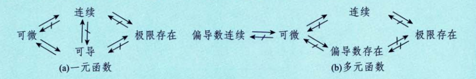
关键点： - 对于一元函数，“可微”与“可导”是等价的。 - 对于多元函数，“可微”蕴含“连续”和“偏导存在”，但“偏导存在”不能推出“可微”，“连续”也不能推出“可微”。
52. 可微的判别步骤 (以二元函数为例)¶
判断函数 \(z = f(x, y)\) 在点 \((x_0, y_0)\) 处是否可微，按以下步骤进行：
-
计算全增量： $$ \Delta z = f(x_0 + \Delta x, y_0 + \Delta y) - f(x_0, y_0) $$
-
写出线性增量： $$ A \Delta x + B \Delta y $$ 其中 \(A = f'_x(x_0, y_0)\), \(B = f'_y(x_0, y_0)\)，即在该点处的两个偏导数值。
-
作极限判断： $$ \lim_{\substack{\Delta x \to 0 \ \Delta y \to 0}} \frac{\Delta z - (A \Delta x + B \Delta y)}{\sqrt{(\Delta x)^2 + (\Delta y)^2}} = 0 $$ 若该极限等于 \(0\)，则函数 \(z = f(x, y)\) 在点 \((x_0, y_0)\) 处可微。
Tips: 一元函数可微的判别方法： - 计算 \(\Delta y = f(x_0 + \Delta x) - f(x_0)\)。 - 线性增量为 \(A \Delta x = f'(x_0) \Delta x\)。 - 判断极限： $$ \lim_{\Delta x \to 0} \frac{\Delta y - A \Delta x}{\Delta x} = 0 $$ 若成立，则 \(y = f(x)\) 在 \(x_0\) 处可微。
53.微分与导数的关系¶
1. 微分的定义¶
在点 \(x = x_0\) 处，函数 \(y = f(x)\) 的微分 \(dy\) 定义为： $$ \left. dy \right|_{x=x_0} = f'(x_0) \cdot dx $$
解释：
- \(f'(x_0)\) 是函数 \(f(x)\) 在点 \(x_0\) 处的导数值，代表该点切线的斜率。
- \(dx\) 是自变量 \(x\) 的一个无穷小增量（微分），可以看作是 \(\Delta x\) 的极限形式。
- \(dy\) 是因变量 \(y\) 对应的线性主部，即当 \(x\) 变化 \(dx\) 时，\(y\) 的近似变化量。
- 这个公式表明：微分 = 导数 × 自变量微分。
2. 函数增量与微分的关系¶
函数在 \(x_0\) 点的总增量 \(\Delta y\) 可以分解为： $$ \Delta x = dx, \quad \Delta y = dy + o(\Delta x) $$
解释：
- \(\Delta x\) 是自变量的有限增量，但在微分理论中，我们常将其等同于 \(dx\)。- \(\Delta y = f(x_0 + \Delta x) - f(x_0)\) 是函数值的真实增量。
- \(o(\Delta x)\) 是比 \(\Delta x\) 更高阶的无穷小量，表示 \(\Delta y\) 中不能被线性部分 \(dy\) 描述的“误差”或“非线性部分”。
- 这个等式说明：函数的真实增量 = 线性近似（微分）+ 高阶无穷小误差。
3. 导数的极限定义与微分的关系推导¶
通过极限过程，可以从增量比推导出导数： $$ \lim_{\Delta x \to 0} \frac{\Delta y}{\Delta x} = \lim_{\Delta x \to 0} \frac{A \Delta x}{\Delta x} + \lim_{\Delta x \to 0} \frac{o(\Delta x)}{\Delta x} = A = f'(x_0) $$
详细推导说明：
- 将 \(\Delta y = dy + o(\Delta x)\) 代入增量比 \(\frac{\Delta y}{\Delta x}\)。
- 由于 \(dy = f'(x_0) \cdot dx = f'(x_0) \cdot \Delta x\)（这里令 \(A = f'(x_0)\)），所以： $$ \frac{\Delta y}{\Delta x} = \frac{f'(x_0) \cdot \Delta x + o(\Delta x)}{\Delta x} = f'(x_0) + \frac{o(\Delta x)}{\Delta x} $$
- 当 \(\Delta x \to 0\) 时： 第一项 \(f'(x_0)\) 保持不变。 第二项 \(\frac{o(\Delta x)}{\Delta x} \to 0\)（因为 \(o(\Delta x)\) 是比 \(\Delta x\) 更高阶的无穷小）。
- 因此： $$ \lim_{\Delta x \to 0} \frac{\Delta y}{\Delta x} = f'(x_0) $$
- 这正是导数的定义！它从“微分近似”的角度重新验证了导数的极限本质。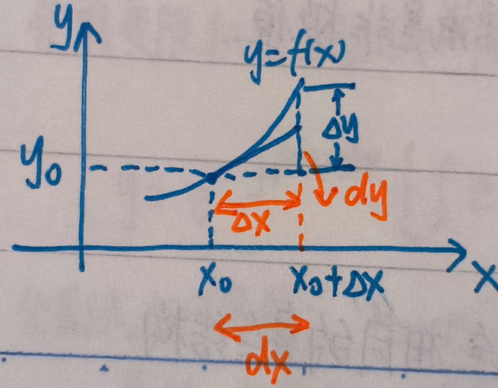
导数 \(f'(x_0)\) 是函数在某点的变化率，而微分 \(dy\) 是利用这个变化率对函数增量进行线性近似的结果。
54. 均值不等式 (调和平均 ≤ 几何平均 ≤ 算术平均 ≤ 平方平均)¶
对于 \(n\) 个非负实数 \(x_1, x_2, \dots, x_n \ge 0\)，有： $$ \frac{1}{\frac{1}{x_1} + \frac{1}{x_2} + \cdots + \frac{1}{x_n}} \le \sqrt[n]{x_1 x_2 \cdots x_n} \le \frac{x_1 + x_2 + \cdots + x_n}{n} \le \sqrt{\frac{x_1^2 + x_2^2 + \cdots + x_n^2}{n}} $$
等号成立条件： 当且仅当 \(x_1 = x_2 = \cdots = x_n\) 时取等号。
Tips: 相关题目见《张宇1000题》第13章第21题；《凯哥讲义3》P14。
55. 柯西不等式 (Cauchy-Schwarz Inequality)¶
对于两组实数 \((a_1, a_2, \dots, a_n)\) 和 \((b_1, b_2, \dots, b_n)\)，有：
等号成立条件： 当且仅当两组数成比例，即存在常数 \(\lambda\) 使得 \(a_i = \lambda b_i\) (\(i=1,2,\dots,n\)) 时取等号。
注意： 笔记中“均为非负实数”的限定并非必要，柯西不等式对任意实数均成立。
56. 积分的物理应用¶
① 位移大小¶
若速度函数为 \(v(t)\)，则从时刻 \(t_1\) 到 \(t_2\) 的位移大小为： $$ s = \int_{t_1}^{t_2} v(t) \, dt $$
② 总路程¶
总路程是速度的绝对值积分： $$ s = \int_{t_1}^{t_2} |v(t)| \, dt $$
③ 做功¶
若力 \(F(x)\) 是位置 \(x\) 的函数，则从 \(a\) 到 \(b\) 所做的功为： $$ W = \int_a^b dW = \int_a^b F(x) \, dx $$
④ 从容器中抽出液体所做的功¶
设液体密度为 \(\rho\)，重力加速度为 \(g\)，容器在高度 \(y\) 处的横截面积为 \(A(y)\)，需将液体提升到高度 \(H\)，则所做的功为： $$ W = \int_{y_1}^{y_2} \rho g A(y) (H - y) \, dy $$ 其中，\((H - y)\) 为在深度 \(y\) 处的液体质点需要被提升的距离。
⑤ 静水压力¶
作用在竖直平板上的静水压力，若平板在深度范围 \([y_1, y_2]\) 内，深度为 \(y\) 处的水平宽度为 \(L(y)\)，则压力为： $$ F = \int_{y_1}^{y_2} \rho g y \cdot L(y) \, dy $$
⑥ 细杆质心¶
若细杆在区间 \([a, b]\) 上的线密度为 \(\rho(x)\)，则其质心坐标 \(\bar{x}\) 为： $$ \bar{x} = \frac{\int_a^b x \cdot \rho(x) \, dx}{\int_a^b \rho(x) \, dx} $$
57. 关于 \(f(b) - f(a)\) 型问题的思考¶
这类问题通常与微分中值定理相关，核心思想是将函数值之差转化为导数或积分形式。
① 牛顿-莱布尼茨公式 (微积分基本定理)¶
若函数 \(f(x)\) 在区间 \([a, b]\) 上连续，则： $$ f(b) - f(a) = \left. f(x) \right|_a^b = \int_a^b f'(x) \, dx $$
要求： \(f(x)\) 在 \([a, b]\) 上连续，且 \(f'(x)\) 存在（或至少可积）。
② 拉格朗日中值定理¶
若函数 \(f(x)\) 在闭区间 \([a, b]\) 上连续，在开区间 \((a, b)\) 内可导，则至少存在一点 \(\xi \in (a, b)\)，使得： $$ f'(\xi) = \frac{f(b) - f(a)}{b - a} $$
Tips: 相关题目见《张宇1000题》第11章第9题。
58. 复合函数的单调性¶
复合函数 \(y = f(g(x))\) 的单调性遵循“同增异减”原则：
- 内外层函数单调性相同：复合函数为增函数。
- 内外层函数单调性相反：复合函数为减函数。
记忆口诀： “同增异减”。
59. 变限积分¶
基本性质：¶
若 \(f(x)\) 在区间 \([a, b]\) 上连续，则函数 \(\Phi(x) = \int_a^x f(t) \, dt\) 是 \(f(x)\) 在 \([a, b]\) 上的一个原函数。
- \(\Phi(x)\) 在 \([a, b]\) 上可导，且 \(\Phi'(x) = f(x)\)，\(\forall x \in [a, b]\)。
推广形式（莱布尼茨公式）：¶
若 \(u(x), v(x)\) 可导，且 \(f(t)\) 连续，则： $$ \frac{d}{dx} \left[ \int_{v(x)}^{u(x)} f(t) \, dt \right] = f(u(x)) \cdot u'(x) - f(v(x)) \cdot v'(x) $$
Tips:
- 只要 \(f(x)\) 在积分区间上可积，变限积分函数 \(\Phi(x)\) 一定连续。
- 对变限积分求导时，被积函数中不能含有求导变量 \(x\)（即积分上下限中的变量）。
60. 关于 \(f(x)\) 在区间 \([a, b]\) 上的平均值¶
函数 \(f(x)\) 在区间 \([a, b]\) 上的平均值定义为： $$ \bar{f}(x) = \frac{\int_a^b f(x) \, dx}{b - a} $$
61. 平面图形面积¶
① 直角坐标系下：¶
由两条曲线 \(y_1(x)\) 和 \(y_2(x)\) 围成的图形面积为： $$ S = \int_a^b |y_1(x) - y_2(x)| \, dx $$
② 极坐标系下：¶
由两条极径曲线 \(r_1(\theta)\) 和 \(r_2(\theta)\) 围成的图形面积为： $$ S = \int_\alpha^\beta \frac{1}{2} |r_1^2(\theta) - r_2^2(\theta)| \, d\theta $$
62. 旋转体体积¶
① 绕 \(x\) 轴旋转：¶
由曲线 \(y = f(x)\) (\(a \le x \le b\)) 与 \(x\) 轴围成的区域绕 \(x\) 轴旋转所得体积为： $$ V_x = \int_a^b \pi y^2(x) \, dx $$
② 绕 \(y\) 轴旋转：¶
由曲线 \(y = f(x)\) (\(a \le x \le b\)) 与 \(y\) 轴围成的区域绕 \(y\) 轴旋转所得体积为： $$ V_y = 2\pi \int_a^b x |y(x)| \, dx $$
③ 绕任意直线 \(Ax + By + C = 0\) 旋转：¶
由曲线 \(y = f(x)\) (\(a \le x \le b\)) 与该直线围成的区域绕此直线旋转所得体积为：
Tips: 记忆口诀：“面积 × 走过的路”。即体积等于截面面积乘以质心走过的距离（帕普斯定理）。
63. 形心坐标公式¶
设平面区域 \(D\) 的面积为 \(A = \iint_D d\sigma\)，则其形心 \((\bar{x}, \bar{y})\) 坐标为：
- \(\bar{x} = \frac{1}{A} \iint_D x \, d\sigma = \frac{\iint_D x \, d\sigma}{\iint_D d\sigma}\)
- \(\bar{y} = \frac{1}{A} \iint_D y \, d\sigma = \frac{\iint_D y \, d\sigma}{\iint_D d\sigma}\)
Tips:
- 当积分区域 \(D\) 为圆形时，由于对称性，形心 \(\bar{x}, \bar{y}\) 已知。
- 此时，有 \(\iint_D x \, d\sigma = \bar{x} \cdot A\)，\(\iint_D y \, d\sigma = \bar{y} \cdot A\)，可以简化二重积分运算。
64. 平面曲线的弧长公式¶
① 显函数形式：¶
若曲线方程为 \(y = y(x)\) (\(a \le x \le b\))，则弧长为： $$ s = \int_a^b \sqrt{1 + [y'(x)]^2} \, dx $$
② 参数方程形式：¶
若曲线方程为 \(\begin{cases} x = x(t) \\ y = y(t) \end{cases}\) (\(\alpha \le t \le \beta\))，则弧长为： $$ s = \int_\alpha^\beta \sqrt{[x'(t)]^2 + [y'(t)]^2} \, dt $$
③ 极坐标形式：¶
若曲线方程为 \(r = r(\theta)\) (\(\alpha \le \theta \le \beta\))，则弧长为： $$ s = \int_\alpha^\beta \sqrt{[r(\theta)]^2 + [r'(\theta)]^2} \, d\theta $$
65.曲率及曲率半径公式¶
设 \(y(x)\) 二阶可导，则曲线 \(y = y(x)\) 在点 \((x, y(x))\) 处的曲率公式为
曲率半径的计算公式：
注：弯曲程度越大，曲率越大，曲率圆的半径越小。
66. \(e^x\) 的泰勒级数展开¶
对于任意实数 \(x \in \mathbb{R}\)，有： $$ e^x = \sum_{n=0}^{\infty} \frac{x^n}{n!} = 1 + x + \frac{x^2}{2!} + \frac{x^3}{3!} + \cdots $$
67. 反三角函数的复合关系与图像¶
① 复合关系：¶
$ \sin(\arcsin x) = x \quad (\text{定义域 } [-1, 1]) $ 但 $ \arcsin(\sin x) \neq x \quad (\text{除非 } x \in [-\frac{\pi}{2}, \frac{\pi}{2}]) $
② 函数 \(f(x) = \arcsin(\sin x)\) 的图像：¶
该函数是一个周期为 \(2\pi\) 的锯齿波形，在区间 \([-\frac{\pi}{2}, \frac{\pi}{2}]\) 上等于 \(y=x\)，在其他区间通过周期性延拓得到。
\(f(x) = \arcsin(\sin x)\) 的函数图像：
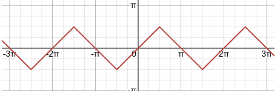
图像特征： 在每个长度为 \(\pi\) 的区间内，图像是斜率为 1 或 -1 的线段，整体呈“之”字形。
68. 等差数列与等比数列¶
① 等差数列：¶
- 通项公式：\(a_n = a_1 + (n-1)d\)
- 前 \(n\) 项和：\(S_n = \frac{n}{2} [2a_1 + (n-1)d] = \frac{n}{2} (a_1 + a_n)\)
② 等比数列：¶
- 通项公式：\(a_n = a_1 \cdot q^{n-1}\)
-
前 \(n\) 项和： $$ S_n = \begin{cases} n a_1, & q = 1 \ \dfrac{a_1(1 - q^n)}{1 - q}, & q \neq 1 \end{cases} $$
-
特殊情况：当 \(|q| < 1\) 时，无穷等比级数和为 \(S = \frac{a_1}{1-q}\)。
- 求和公式：\(1 + q + q^2 + \cdots + q^{n-1} = \frac{1 - q^n}{1 - q}\) (\(q \neq 1\))
69. 椭圆方程¶
① 横椭圆（长轴在 \(x\) 轴）：¶
标准方程：
参数方程：
② 纵椭圆（长轴在 \(y\) 轴）：¶
标准方程：
参数方程：
Tips: “大者为 \(a\)”，即 \(a\) 总是半长轴，决定椭圆的“定轴向”。
③ 椭圆面积与焦距：¶
- 面积：\(S = \pi ab\)
- 焦距：\(c = \sqrt{a^2 - b^2}\)
70. 已知 \(f'(x)\)，求含 \(f(x)\) 的积分¶
若题目给出导函数 \(f'(x)\)，而要求解包含原函数 \(f(x)\) 的积分（如 \(\int f(x) g(x) dx\)），应考虑使用分部积分法。
71. 双曲正弦函数 \(\sinh x = \ln(x + \sqrt{x^2 + 1})\)¶
这是一个重要的反双曲函数，其性质如下：
- 奇偶性： \(f(-x) = \ln(-x + \sqrt{(-x)^2 + 1}) = \ln\left(\frac{1}{x + \sqrt{x^2 + 1}}\right) = -\ln(x + \sqrt{x^2 + 1}) = -f(x)\)，故为奇函数。
- 导数： \(f'(x) = \frac{1}{\sqrt{1+x^2}}\)
- 渐近行为： 当 \(x \to 0\) 时，\(f(x) \sim x\)。
72. 导数的定义表达式¶
设函数 \(y = f(x)\) 在点 \(x_0\) 的某个邻域内有定义，则其导数定义为：
-
增量形式： $$ f'(x_0) = \lim_{\Delta x \to 0} \frac{f(x_0 + \Delta x) - f(x_0)}{\Delta x} $$
-
差商形式： $$ f'(x_0) = \lim_{x \to x_0} \frac{f(x) - f(x_0)}{x - x_0} $$
-
导函数定义： $$ f'(x) = \lim_{\Delta x \to 0} \frac{f(x + \Delta x) - f(x)}{\Delta x}, \quad x \in I $$
Tips:
- 对称导数：\(\lim_{h \to 0} \frac{f(x_0 + h) - f(x_0 - h)}{2h}\) 存在，不能保证 \(f'(x_0)\) 存在（仅当 \(f(x)\) 在 \(x_0\) 处连续时等价）
- 导数 \(f'(x_0)\) 存在 \(\Leftrightarrow\) 左右导数存在且相等。
73. 绝对收敛蕴含收敛¶
若反常积分 \(\int_a^{+\infty} |f(x)| \, dx\) 收敛，则 \(\int_a^{+\infty} f(x) \, dx\) 必然收敛。
结论： 绝对收敛 ⇒ 收敛。
74. 渐近线¶
① 垂直渐近线：¶
若 \(x_0\) 是函数 \(f(x)\) 的无定义点或定义区间的端点，且满足： $$ \lim_{x \to x_0^+} f(x) = \infty \quad \text{或} \quad \lim_{x \to x_0^-} f(x) = \infty $$ 则直线 \(x = x_0\) 是一条垂直渐近线。
② 水平渐近线：¶
若极限 \(\lim_{x \to +\infty} f(x) = y_1\) 和 \(\lim_{x \to -\infty} f(x) = y_2\) 存在，则直线 \(y = y_1\) 和 \(y = y_2\) 是水平渐近线。
③ 斜渐近线：¶
若极限 \(\lim_{x \to \infty} \frac{f(x)}{x} = a\) (\(a \neq 0\)) 存在，且极限 \(\lim_{x \to \infty} [f(x) - ax] = b\) 存在，则直线 \(y = ax + b\) 是斜渐近线。
求解步骤：
- 先求 \(a = \lim_{x \to \infty} \frac{f(x)}{x}\)。
- 再求 \(b = \lim_{x \to \infty} [f(x) - ax]\)。
- 得到斜渐近线方程 \(y = ax + b\)。
75. 高阶无穷小的运算¶
对于任意实数 \(m, n\)，有： $$ x^m \cdot O(x^n) = O(x^{m+n}) $$
含义： 一个无穷小量乘以另一个更高阶的无穷小量，结果仍是更高阶的无穷小量。
76. 可积的充分条件¶
在闭区间 \([a, b]\) 上，以下情况下的函数必定可积：
- 连续函数： 若 \(f(x)\) 在 \([a, b]\) 上连续，则 \(f(x)\) 在该区间上可积。
- 单调函数： 若 \(f(x)\) 在 \([a, b]\) 上单调，则 \(f(x)\) 在该区间上可积。
- 有界且仅有有限个间断点： 若 \(f(x)\) 在 \([a, b]\) 上有界，且仅有有限个第一类间断点（跳跃或可去间断点），则 \(f(x)\) 在该区间上可积。
重要提示：
- “\(f(x)\) 可积”意味着其原函数存在，但反之不成立。即“在积分区域上存在原函数”是“可积”的必要条件，而非充分条件。
- 因此，“\(f(x)\) 可积 \(\Rightarrow\) 在积分区域上存在原函数”的说法是错误的。
77. 表格法求解积分 (分部积分法)¶
表格法是处理形如 \(\int P_n(x) e^{ax} dx\)、\(\int P_n(x) \sin(bx) dx\) 等多项式与指数/三角函数乘积积分的有效方法。
方法步骤：¶
- 列表： 将被积函数中的一个部分（通常是多项式）设为 \(u\)，另一个部分（通常是指数或三角函数）设为 \(v'\)。
- 求导与积分： 对 \(u\) 反复求导，对 \(v'\) 反复积分，直到 \(u\) 的某阶导数为零。
- 相乘与符号： 从左上角开始，将 \(u\) 的每一项与 \(v'\) 对应的下一项错位相乘，符号按 “+ - + - ...” 交替。
- 最后项： 最后一项是 \(\int u^{(n)} v^{(n-1)} dx\)，其中 \(u^{(n)}\) 是最后一项非零导数。
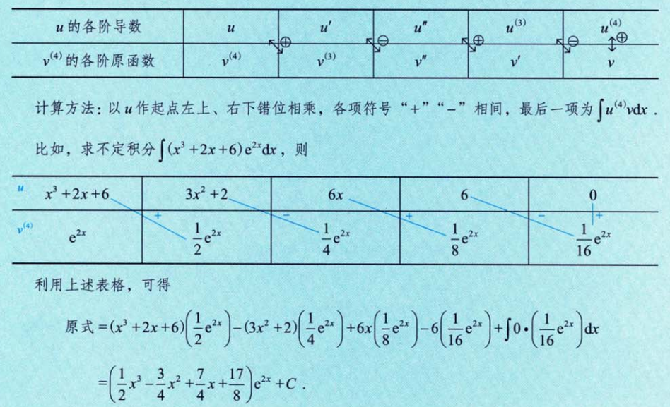
示例：求 \(\int (x^3 + 2x + 6) e^{2x} \, dx\)¶
| \(u\) 的各阶导数 | \(v'\) 的各阶原函数 |
|---|---|
| \(x^3 + 2x + 6\) | \(e^{2x}\) |
| \(3x^2 + 2\) | \(\frac{1}{2} e^{2x}\) |
| \(6x\) | \(\frac{1}{4} e^{2x}\) |
| \(6\) | \(\frac{1}{8} e^{2x}\) |
| \(0\) | \(\frac{1}{16} e^{2x}\) |
计算：
78. 关于 \(\int e^{ax} \sin(bx) \, dx\) 和 \(\int e^{ax} \cos(bx) \, dx\) 型积分的求解¶
这类积分可以通过构造一个二阶线性方程组来求解，或者直接使用公式： $$ \int e^{ax} \sin bx \, dx = \frac{ \begin{vmatrix} (e^{ax})' & (\sin bx)' \ e^{ax} & \sin bx \end{vmatrix} }{a^2 + b^2} + C = \frac{a e^{ax} \sin bx - b e^{ax} \cos bx}{a^2 + b^2} + C $$
推导思路： 设 \(I = \int e^{ax} \sin(bx) \, dx\), \(J = \int e^{ax} \cos(bx) \, dx\)，通过两次分部积分，可以得到关于 \(I\) 和 \(J\) 的方程组，联立求解即可。
79. 旋转曲面的面积 (侧面积)¶
① 显函数形式 \(y = f(x)\), \(a \le x \le b\)，绕 \(x\) 轴旋转：¶
② 参数方程形式 \(L: \begin{cases} x = x(t) \\ y = y(t) \end{cases}\), \(\alpha \le t \le \beta\), \(x'(t) \neq 0\)，绕 \(x\) 轴旋转：¶
③ 极坐标形式 \(r = r(\theta)\), \(\alpha \le \theta \le \beta\)，绕 \(x\) 轴旋转：¶
核心思想： 侧面积 = 曲线长度 × 旋转半径（平均值）。
80. 放缩常用的不等式¶
本节汇总了一系列在证明题和求极限中常用的放缩技巧。
① 平均值放缩¶
对于任意实数 \(u_1, u_2, \dots, u_n\)： $$ n \cdot u_{\min} \le u_1 + u_2 + \cdots + u_n \le n \cdot u_{\max} $$
- 当所有 \(u_i \ge 0\) 时，有更紧的下界： $$ 1 \cdot u_{\max} \le u_1 + u_2 + \cdots + u_n \le n \cdot u_{\max} $$
② 绝对值三角不等式¶
- \(|a \pm b| \le |a| + |b|\)
- \(||a| - |b|| \le |a - b|\)
- 推广到 \(n\) 项： $$ |a_1 \pm a_2 \pm \cdots \pm a_n| \le |a_1| + |a_2| + \cdots + |a_n| $$
③ 均值不等式链¶
对于非负实数 \(a, b, c \ge 0\)：
-
二元情况： $$ \sqrt{ab} \le \frac{a+b}{2} \le \sqrt{\frac{a^2 + b^2}{2}} \quad \text{且} \quad |ab| \le \frac{a^2 + b^2}{2} $$
-
三元情况： $$ \sqrt[3]{abc} \le \frac{a+b+c}{3} \le \sqrt{\frac{a^2 + b^2 + c^2}{3}} $$
④ 幂函数单调性¶
设 \(a \ge b > 0\)，则：
- 当 \(m > 0\) 时，\(a^m \ge b^m\)
- 当 \(m < 0\) 时，\(a^m \le b^m\)
⑤ 分式不等式¶
若 \(0 < a < x < b\) 且 \(0 < c < y < d\)，则： $$ \frac{c}{b} < \frac{y}{x} < \frac{d}{a} $$
⑥ 三角函数不等式¶
- 在 \((0, \frac{\pi}{2})\) 区间内：\(\sin x < x < \tan x\)
- 对于 \(x > 0\)：\(\sin x < x\)
- 在 \((0, \frac{\pi}{4})\) 区间内：\(x < \tan x < \frac{4}{\pi} x\)
- 在 \((0, \frac{\pi}{2})\) 区间内：\(\sin x > \frac{2}{\pi} x\) （要求背记）
⑦ 积分的绝对值不等式¶
解释： “积分的代数和”的绝对值 ≤ “各部分绝对值之和”。
⑧ 反三角函数不等式¶
应用： 可用于证明数列 \(\{x_n\}\) 的单调性，例如当 \(x_n > 0\) 时，\(x_{n+1} = \arctan x_n < x_n\)，故 \(\{x_n\}\) 单调减少。
⑨ 指数不等式¶
⑩ 对数不等式¶
⑪ 对数函数不等式¶
对于 \(x > 0\)： $$ \frac{1}{1+x} < \ln(1 + \frac{1}{x}) < \frac{1}{x} $$ $$ \frac{x}{1+x} < \ln(1 + x) < x $$
Tips: 上述不等式均可通过拉格朗日中值定理证明。
⑫ 最值定理¶
利用闭区间上连续函数必有最大值和最小值的性质进行放缩。
⑬ 压缩映射原理¶
i. 数列收敛判定：¶
对数列 \(\{x_n\}\)，若存在常数 \(k \in (0, 1)\)，使得： $$ |x_{n+1} - a| \le k |x_n - a|, \quad n = 1, 2, \dots $$ 则数列 \(\{x_n\}\) 收敛于 \(a\)。
证明： $$ 0 \le |x_{n+1} - a| \le k |x_n - a| \le k^2 |x_{n-1} - a| \le \cdots \le k^n |x_1 - a| \to 0 \quad (\text{因为 } \lim_{n \to \infty} k^n = 0) $$ 故 \(\lim_{n \to \infty} |x_{n+1} - a| = 0\)，即 \(\{x_n\}\) 收敛于 \(a\)。
ii. 迭代数列收敛判定：¶
对数列 \(\{x_n\}\)，若 \(x_{n+1} = f(x_n)\)，\(n=1,2,\dots\)，且 \(f(x)\) 可导，\(a\) 是方程 \(f(x) = x\) 的唯一解，且 \(\forall x \in \mathbb{R}\)，有 \(|f'(x)| \le k < 1\)，则 \(\{x_n\}\) 收敛于 \(a\)。
证明： 由拉格朗日中值定理，存在 \(\xi\) 介于 \(a\) 与 \(x_n\) 之间，使得： $$ |x_{n+1} - a| = |f(x_n) - f(a)| = |f'(\xi)| \cdot |x_n - a| \le k |x_n - a| $$ 由 i 知，\(\{x_n\}\) 收敛于 \(a\)。
81. 反常积分计算¶
反常积分的计算需特别注意其收敛性，通常按以下步骤进行：
- 存在瑕点，拆区间： 若积分区间内或端点处存在瑕点（被积函数无界），需将积分区间在瑕点处拆开。
- 拆成多积分（分部），考虑每一项敛散性： 将原积分拆分为多个定积分或反常积分，分别判断其敛散性。若其中任意一项发散，则整个积分发散。
- 利用分部积分法时，有： $$ \int u v' \, dx = \int u \, dv = uv - \int v \, du = uv - \int v \cdot u' \, dx $$
- 对于无穷区间 \((0, +\infty)\)：
- 可将其拆为 \((0, 1)\) 和 \((1, +\infty)\) 两部分。
- 对于 \((1, +\infty)\) 部分，可令 \(x = \frac{1}{t}\)，将其变为 \((0, 1)\) 区间。
- 对于 \((0, +\infty)\) 整体，可令 \(x = \tan t\)，将其变为 \(t \in (0, \frac{\pi}{2})\)。
82. 区间再现公式¶
设函数 \(f(x)\) 在闭区间 \([a, b]\) 上可积，则有以下恒等式：
-
基本形式： $$ \int_a^b f(x) \, dx = \int_a^b f(a + b - x) \, dx $$
-
推论： $$ \int_a^b f(x) \, dx = \frac{1}{2} \left( \int_a^b f(x) \, dx + \int_a^b f(a + b - x) \, dx \right) $$
-
三角函数应用：
- \(\int_0^{\frac{\pi}{2}} f(\sin x) \, dx = \int_0^{\frac{\pi}{2}} f(\cos x) \, dx\) （因为 \(\sin(\frac{\pi}{2} - x) = \cos x\)）
- \(\int_0^{\pi} f(\sin x) \, dx = 2 \int_0^{\frac{\pi}{2}} f(\sin x) \, dx\) （因为 \(\sin(\pi - x) = \sin x\)，函数关于 \(x = \frac{\pi}{2}\) 对称）
用途： 简化对称区间的积分计算。
83.\(f(x)\)积分的奇偶性与周期性讨论¶
(1) \(f(x)\) 为可积的奇函数 \(\Rightarrow\) $$ \begin{cases} \int_0^x f(t)dt \text{ 为偶函数}, \ \int_a^x f(t)dt \text{ 为偶函数 } (a \ne 0). \end{cases} $$
此时 \(f'(x)\) 为偶函数
注 (1) 若 \(f(x)\) 为连续的奇函数，则 \(\int_a^x f(t)dt + C\) 也是偶函数，故 \(f(x)\) 的全体原函数均为偶函数。 (2) 只需要被积函数可积，即可有变限积分的相关性质，只有被积函数连续时，才能谈原函数的相关性质，以下同。
(2) \(f(x)\) 为可积的偶函数 \(\Rightarrow\)
此时 \(f'(x)\) 为奇函数
注：若 \(f(x)\) 为连续的偶函数，则 \(f(x)\) 的全体原函数中，只有 \(\int_0^x f(t)dt\) 是奇函数。
(3) \(f(x)\) 是可积的且以 \(T\) 为周期的周期函数，则 \(\int_0^x f(t)dt\) 是以 \(T\) 为周期的周期函数 \(\Leftrightarrow \int_0^T f(x)dx = 0\)。 \(\rightarrow f'(x)\) 也是以 \(T\) 为周期
注：\(\int_a^x f(t)dt = \int_a^0 f(t)dt + \int_0^x f(t)dt\) 亦是以 \(T\) 为周期的周期函数 \((a \ne 0)\)。 因为，\(\int_a^0 f(t)dt\)为常数，\(\int_0^x f(t)dt\)为周期函数。
84. 高阶导数（莱布尼兹公式）¶
莱布尼兹公式用于求两个函数乘积的高阶导数。
-
加法形式： $$ (u \pm v)^{(n)} = u^{(n)} \pm v^{(n)} $$
-
乘法形式： $$ (uv)^{(n)} = u^{(n)}v + C_n^1 u^{(n-1)} v' + C_n^2 u^{(n-2)} v'' + \cdots + C_n^{n-1} u' v^{(n-1)} + u v^{(n)} $$ 或者写成求和形式： $$ (uv)^{(n)} = \sum_{k=0}^{n} C_n^k \, u^{(n-k)} \, v^{(k)} $$
其中，组合数 \(C_n^k = \binom{n}{k} = \dfrac{n!}{k!(n-k)!}\)。
记忆方法： 系数遵循杨辉三角（帕斯卡三角）：
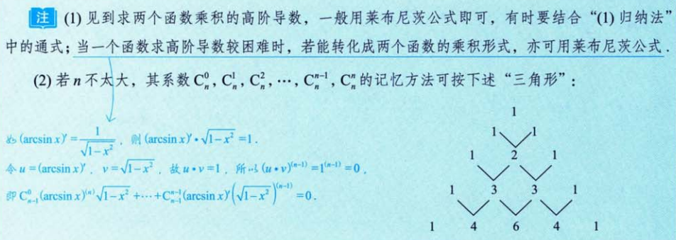
Tips: 一般高阶导数题目建议逐级求导，寻找规律，而非直接套用公式。
85. 凹凸性判别和拐点¶
① 凹凸性判别：¶
设函数 \(f(x)\) 在区间 \(I\) 上二阶可导：
- 若 \(f''(x) > 0\)，则曲线在 \(I\) 上是凹的。
- 若 \(f''(x) < 0\)，则曲线在 \(I\) 上是凸的。
记忆口诀： “二阶导正，图形上凹；二阶导负，图形下凸”。
② 拐点判别：¶
拐点是曲线凹凸性改变的点。若 \(x_0\) 是拐点，则：
- 必要条件： \(f''(x_0) = 0\)。
- 充分条件： 在 \(x_0\) 的去心邻域内，\(f''(x)\) 变号。
- 高阶导数法： 若 \(f(x)\) 在 \(x_0\) 处 \(n\) 阶可导，且 \(f^{(m)}(x_0) = 0\) (\(m = 2, 3, \dots, n-1\))，而 \(f^{(n)}(x_0) \neq 0\)，则当 \(n\) 为奇数时，\(x_0\) 为拐点。
核心思想： 拐点是“曲率”发生改变的点，即二阶导数变号的点。
86. 极值点的判定¶
必要条件：¶
若函数 \(f(x)\) 在 \(x = x_0\) 处可导且取极值，则必有： $$ f'(x_0) = 0 $$
注意： 此为必要条件，非充分条件。满足 \(f'(x_0) = 0\) 的点称为驻点，驻点不一定是极值点。
Tips: 驻点一定是可导点，称 \(f'(x_0) = 0\)，\(x_0\) 为驻点。但驻点不一定为极值点。
判别极值的充分条件：¶
-
第一充分条件（利用一阶导数符号变化）：
- 若 \(f(x)\) 在 \(x_0\) 的去心邻域内可导，且 \(f'(x)\) 在 \(x_0\) 左右变号，则 \(x_0\) 为极值点。
- 左正右负 \(\Rightarrow\) 极大值点。
- 左负右正 \(\Rightarrow\) 极小值点。
- 若 \(f(x)\) 在 \(x_0\) 的去心邻域内可导，且 \(f'(x)\) 在 \(x_0\) 左右变号，则 \(x_0\) 为极值点。
-
第二充分条件（利用二阶导数）：
- 若 \(f'(x_0) = 0\) 且 \(f''(x_0) \neq 0\)，则：
- \(f''(x_0) < 0\) \(\Rightarrow\) \(f(x)\) 在 \(x_0\) 处取极大值。
- \(f''(x_0) > 0\) \(\Rightarrow\) \(f(x)\) 在 \(x_0\) 处取极小值。
- 若 \(f'(x_0) = 0\) 且 \(f''(x_0) \neq 0\)，则：
-
高阶导数法：
- 若 \(f(x)\) 在 \(x = x_0\) 处 \(n\) 阶可导，且 \(f^{(m)}(x_0) = 0\) (\(m = 1, 2, \dots, n-1\))，而 \(f^{(n)}(x_0) \neq 0\) (\(n \ge 2\))，则：
- 当 \(n\) 为偶数时，\(x_0\) 为极值点。
- \(f^{(n)}(x_0) < 0\) \(\Rightarrow\) 极大值点。
- \(f^{(n)}(x_0) > 0\) \(\Rightarrow\) 极小值点。
- 当 \(n\) 为奇数时，\(x_0\) 为拐点。
- 当 \(n\) 为偶数时，\(x_0\) 为极值点。
- 若 \(f(x)\) 在 \(x = x_0\) 处 \(n\) 阶可导，且 \(f^{(m)}(x_0) = 0\) (\(m = 1, 2, \dots, n-1\))，而 \(f^{(n)}(x_0) \neq 0\) (\(n \ge 2\))，则：
87. 极值点与拐点的结论¶
① 基本关系：¶
- 不可导点可以同时是拐点和极值点。
- 可导点不能同时是拐点和极值点。（因为极值点要求一阶导数为零或不存在，拐点要求二阶导数变号，两者在可导点处的条件冲突。）
② 特殊函数形式：¶
对于形如 \(f(x) = (x - a)^n g(x)\) (\(n > 1\)) 且 \(g(a) \neq 0\) 的函数：
- 当 \(n\) 为偶数时，\(x = a\) 是 \(f(x)\) 的极值点。
- 当 \(n\) 为奇数时，\((a, 0)\) 是 \(f(x)\) 的拐点。
③ 一般多项式函数：¶
对于形如 \(f(x) = (x - a_1)^{n_1} (x - a_2)^{n_2} \cdots (x - a_k)^{n_k}\) 的多项式，其中 \(n_i\) 为正整数，\(a_i\) 互不相等。
记：
- \(k_1\) 为 \(n_i = 1\) 的个数。
- \(k_2\) 为 \(n_i > 1\) 且 \(n_i\) 为偶数的个数。
- \(k_3\) 为 \(n_i > 1\) 且 \(n_i\) 为奇数的个数。
则：
- 极值点个数为 \(k_1 + 2k_2 + k_3 - 1\)。
- 拐点个数为 \(k_1 + 2k_2 + 3k_3 - 2\)。
另一种解法：通过求导找零点个数¶
示例1: (2001年真题)¶
函数 \(y = (x-1)^2 (x-3)^2\) 的拐点个数。
- 分析： 函数有重根 \(x=1\) 和 \(x=3\)，均为偶数次方，故均为极值点。
- 求导： 对 \(y\) 求一阶导和二阶导，找出 \(y'\) 和 \(y''\) 的零点及其重数。
- 结论： 该函数有 2个拐点。
示例2: (2011年真题)¶
函数 \(y = (x-1)(x-2)^2(x-3)^3(x-4)^4\)。
- 分析： 通过求导并分析各阶导数的零点重数来判断。
- 结论： 该函数有 6个驻点，5个极值点，6个拐点。
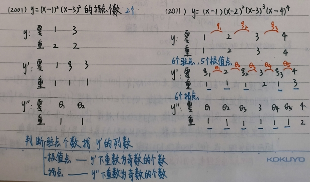
判断驻点、极值点、拐点个数的方法总结：¶
- 驻点个数： 等于 \(y'\) 的零点个数。
- 极值点个数： 等于 \(y'\) 的零点中，重数为奇数的个数。
- 拐点个数： 等于 \(y''\) 的零点中，重数为奇数的个数。
核心思想： 通过分析导数的零点及其重数来判断函数图像的关键特征点。
88. 反常积分敛散性¶
① 比较判别法¶
设 \(f(x), g(x)\) 在 \([a, +\infty)\) 上连续，且 \(0 \le f(x) \le g(x)\) 恒成立，则：
- 若 \(\int_a^{+\infty} g(x) \, dx\) 收敛，则 \(\int_a^{+\infty} f(x) \, dx\) 也收敛。
- 若 \(\int_a^{+\infty} f(x) \, dx\) 发散，则 \(\int_a^{+\infty} g(x) \, dx\) 也发散。
② 极限比较判别法¶
设 \(f(x), g(x)\) 在 \([a, +\infty)\) 上连续且非负，且 \(\lim_{x \to +\infty} \frac{f(x)}{g(x)} = k\)，则：
-
当 \(k = 0\) 时：
- 若 \(\int_a^{+\infty} g(x) \, dx\) 收敛，则 \(\int_a^{+\infty} f(x) \, dx\) 也收敛。
-
当 \(k = +\infty\) 时：
- 若 \(\int_a^{+\infty} g(x) \, dx\) 发散，则 \(\int_a^{+\infty} f(x) \, dx\) 也发散。
-
当 \(k\) 为非零常数时：
- \(\int_a^{+\infty} f(x) \, dx\) 和 \(\int_a^{+\infty} g(x) \, dx\) 的敛散性相同。
推论： - 当 \(x \to +\infty\) 时，若 \(f(x)\) 和 \(g(x)\) 为同阶无穷小，则两个积分同敛散。 - 当 \(x \to a^+\) 时，若 \(f(x)\) 和 \(g(x)\) 为同阶无穷大，则 \(\int_a^b f(x) \, dx\) 和 \(\int_a^b g(x) \, dx\) 同敛散。
89.P积分的敛散性¶
① 无穷区间上的P积分：¶
对于 \(\int_1^{+\infty} \frac{1}{x^p} \, dx\)，结论为： $$ \begin{cases} p > 1, & \text{收敛} \ p \le 1, & \text{发散} \end{cases} $$
Tips: 对于 \(\int_0^{+\infty} \frac{1}{x^p} \, dx\)，无论 \(p\) 取多少都发散（因为其在 \(0\) 和 \(+\infty\) 两端均可能发散）。
② 瑕积分上的P积分：¶
对于 \(\int_0^1 \frac{1}{x^p} \, dx\) 或 \(\int_a^b \frac{1}{(x-a)^p} \, dx\)、\(\int_a^b \frac{1}{(x-b)^p} \, dx\)，结论为： $$ \begin{cases} 0 < p < 1, & \text{收敛} \ p \ge 1, & \text{发散} \end{cases} $$
90.广义P积分敛散性¶
形如 \(\int_e^{+\infty} \frac{1}{x (\ln x)^p} \, dx\)、\(\int_1^e \frac{1}{x (\ln x)^p} \, dx\)、\(\int_{e^{100}}^{+\infty} \frac{1}{x (\ln x) (\ln \ln x)^p} \, dx\) 等形式的积分。
通过换元（如令 \(t = \ln x\)）可以将其转化为标准的P积分，因此结论相似：
① 对于 \(\int_e^{+\infty} \frac{1}{x (\ln x)^p} \, dx\)：¶
② 对于 \(\int_1^e \frac{1}{x (\ln x)^p} \, dx\)：¶
核心思想： 广义P积分的敛散性判断与标准P积分类似，关键在于看对数项的幂次 \(p\)。
91. \(\arctan x + \arctan \frac{1}{x}\) 的恒等式¶
该恒等式为： $$ \arctan x + \arctan \frac{1}{x} = \begin{cases} \dfrac{\pi}{2}, & x > 0 \ -\dfrac{\pi}{2}, & x < 0 \end{cases} $$
注意： 此恒等式在 \(x=0\) 处无定义，因为 \(\frac{1}{x}\) 无意义。
92. 中值定理¶
① 罗尔定理 (Rolle's Theorem)¶
设函数 \(f(x)\) 在闭区间 \([a, b]\) 上连续，在开区间 \((a, b)\) 内可导，且 \(f(a) = f(b)\)，则至少存在一点 \(\xi \in (a, b)\)，使得： $$ f'(\xi) = 0 $$
② 拉格朗日中值定理 (Lagrange's Mean Value Theorem)¶
设函数 \(f(x)\) 在闭区间 \([a, b]\) 上连续，在开区间 \((a, b)\) 内可导，则至少存在一点 \(\xi \in (a, b)\)，使得： $$ f(b) - f(a) = (b - a) f'(\xi) $$
③ 积分中值定理 (Integral Mean Value Theorem)¶
设函数 \(f(x)\) 在闭区间 \([a, b]\) 上连续，则至少存在一点 \(\xi \in [a, b]\)，使得： $$ \int_a^b f(x) \, dx = (b - a) f(\xi) $$
④ 介值定理 (Intermediate Value Theorem)¶
闭区间上的连续函数，一定可以取到介于其最大值和最小值之间的任意值。
⑤ 柯西中值定理 (Cauchy's Mean Value Theorem)¶
设函数 \(f(x), g(x)\) 在闭区间 \([a, b]\) 上连续，在开区间 \((a, b)\) 内可导，且 \(g'(x) \neq 0\)，则至少存在一点 \(\xi \in (a, b)\)，使得： $$ \frac{f(b) - f(a)}{g(b) - g(a)} = \frac{f'(\xi)}{g'(\xi)} $$
Tips: 在以上所有中值定理中，只有介值定理中的 \(\xi\) 落在闭区间 \([a, b]\) 上（积分中值定理也是）；其余定理中的 \(\xi\) 均落在开区间 \((a, b)\) 内。
93. 积分因子法构造辅助函数¶
“常用来解中值定理证明题”
对于形如 \(f'(\xi) + f(\xi) g(\xi) = 0\) 的题目，都可以构造辅助函数： $$ F(x) = f(x) e^{\int g(x) \, dx} $$
原理： 对 \(F(x)\) 求导： $$ F'(x) = f'(x) e^{\int g(x) \, dx} + f(x) \cdot g(x) e^{\int g(x) \, dx} = e^{\int g(x) \, dx} \left[ f'(x) + f(x) g(x) \right] $$ 因此，若 \(F'(x) = 0\)，则原方程成立。
Tips: 在表达式 \(f'(x) + f(x) g(x)\) 上乘以积分因子 \(e^{\int g(x) \, dx}\) 后，恰好可以凑成一个函数的导数形式。
特殊情况： 若 \(g(x)\) 是一个抽象函数，则需要将公式修改为： $$ F(x) = f(x) \int_a^x g(t) \, dt $$
94. 泰勒定理 (出现高阶导数时)¶
泰勒定理是处理涉及高阶导数问题的核心工具。
1. 带佩亚诺余项的泰勒展开 (用于计算极限)¶
若函数 \(f(x)\) 在 \(x = x_0\) 处 \(n\) 阶可导，则在 \(x_0\) 的邻域内，有： $$ f(x) = f(x_0) + f'(x_0)(x - x_0) + \frac{f''(x_0)}{2!}(x - x_0)^2 + \cdots + \frac{f^{(n)}(x_0)}{n!}(x - x_0)^n + o\left[(x - x_0)^n\right] $$
特点： 仅需知道 \(f(x)\) 在 \(x_0\) 点的各阶导数值，即可写出其局部近似多项式。余项 \(o\left[(x - x_0)^n\right]\) 表示当 \(x \to x_0\) 时，余项比 \((x - x_0)^n\) 更高阶无穷小。
用途： 主要用于求极限或分析函数在某点附近的性态。
2. 带拉格朗日余项的泰勒展开 (用于证明中值定理问题)¶
若函数 \(f(x)\) 在 \(x = x_0\) 处 \(n+1\) 阶可导，则在 \(x_0\) 的邻域内，有： $$ f(x) = f(x_0) + f'(x_0)(x - x_0) + \frac{f''(x_0)}{2!}(x - x_0)^2 + \cdots + \frac{f^{(n)}(x_0)}{n!}(x - x_0)^n + \frac{f^{(n+1)}(\xi)}{(n+1)!}(x - x_0)^{n+1} $$ 其中 \(\xi\) 介于 \(x_0\) 和 \(x\) 之间。
特点： 余项是一个具体的表达式，包含一个未知点 \(\xi\) 的 \((n+1)\) 阶导数。
用途： 主要用于证明题，特别是需要利用中值定理思想的问题。
Tips: 选择导数信息多的点作为 \(x_0\)，而只知道函数值、不知道导数信息的点作为 \(x\)。
3. 当 \(x_0 = 0\) 时的泰勒公式称为麦克劳林公式¶
将上述泰勒公式中的 \(x_0\) 取为 0，即得麦克劳林公式：
- 带拉格朗日余项：
- 带佩亚诺余项：
4. 几个重要函数的麦克劳林展开式¶
以下是几个常用初等函数在 \(x=0\) 处的麦克劳林展开式（通常取到 \(n\) 阶或特定形式）：
① 指数函数：¶
② 正弦函数：¶
③ 余弦函数：¶
④ 几何级数：¶
⑤ 有理函数：¶
⑥ 对数函数：¶
⑦ 幂函数：¶
核心价值： 这些展开式是进行极限计算、函数逼近和证明题的有力工具。
95. 零点定理 (Intermediate Value Theorem for Roots)¶
若函数 \(f(x)\) 在闭区间 \([a, b]\) 上连续，且 \(f(a) \cdot f(b) < 0\)，则 \(f(x)\) 在开区间 \((a, b)\) 内至少有一个根。
核心思想： 连续函数在区间两端异号，则必穿过零点。
96. 罗尔定理推论¶
若函数 \(f^{(n)}(x) = 0\) 至多有 \(k\) 个根，则原函数 \(f(x) = 0\) 至多有 \(n + k\) 个根。
解释： 这是罗尔定理的推广。每求一次导数，方程的根的个数最多减少一个。因此，如果第 \(n\) 阶导数有 \(k\) 个根，那么原函数最多有 \(n+k\) 个根。
记忆口诀： “阶数换根的个数”。
97. 泰勒公式 (重要函数的展开式)¶
以下是几个重要函数在 \(x=0\) 处的泰勒展开式（保留到三阶或特定项）：
- \(\sin x = x - \dfrac{x^3}{3!} + o(x^3)\)
- \(\cos x = 1 - \dfrac{x^2}{2!} + \dfrac{x^4}{4!} + o(x^4)\)
- \(\arcsin x = x + \dfrac{x^3}{3!} + o(x^3)\)
- \(\tan x = x + \dfrac{x^3}{3} + o(x^3)\)
- \(\arctan x = x - \dfrac{x^3}{3} + o(x^3)\)
- \(\ln(1+x) = x - \dfrac{x^2}{2} + \dfrac{x^3}{3} + o(x^3)\)
- \(e^x = 1 + x + \dfrac{x^2}{2!} + \dfrac{x^3}{3!} + o(x^3)\)
- \((1+x)^\alpha = 1 + \alpha x + \dfrac{\alpha(\alpha-1)}{2!}x^2 + o(x^2)\)
98. 常用等价无穷小和重要极限公式¶
当 \(x \to 0\) 时：¶
等价无穷小：¶
- \(\sin x \sim x\)
- \(\tan x \sim x\)
- \(\arcsin x \sim x\)
- \(\arctan x \sim x\)
- \(\ln(1+x) \sim x\)
- \(e^x - 1 \sim x\)，\(1-e^{-x} \sim x\)
- \(a^x - 1 \sim x \ln a\)
- \(1 - \cos x \sim \dfrac{1}{2}x^2\)
- \((1+x)^\alpha - 1 \sim \alpha x\)
高阶无穷小（差值）：¶
- \(x - \sin x \sim \dfrac{1}{6}x^3\)
- \(\arcsin x - x \sim \dfrac{1}{6}x^3\)
- \(\tan x - x \sim \dfrac{1}{3}x^3\)
- \(x - \arctan x \sim \dfrac{x^3}{3}\)
- \(\ln(1+x) - x \sim -\dfrac{x^2}{2}\)
Tips: 这些高阶无穷小关系常用于计算极限中的“差值”问题。
99. 幂指函数的处理方法¶
对于形如 \(u^v\) 的幂指函数，可将其转化为指数形式： $$ u^v = e^{v \ln u} $$
100. 对数函数的等价关系¶
当 \(x \to 1\) 时： $$ \ln x \sim x - 1 $$
Tips: 此关系可由 \(\ln(1+x) \sim x\) (\(x \to 0\)) 推导得到，令 \(x = t-1\) 即可。常用于计算 \(0 \cdot \infty\) 型极限。
101. 计算 \(1^\infty\) 型极限¶
对于形如 \(\lim u^v\) 的极限，其中 \(u \to 1\), \(v \to \infty\)，可用以下公式： $$ \lim u^v = e^{\lim (u-1) \cdot v} $$
推导过程
-
利用对数恒等式变形：首先，我们将原式 \(u^v\) 利用底数 \(e\) 进行转化。根据对数性质 \(a = e^{\ln a}\)，我们可以得到：\(u^v = e^{\ln(u^v)} = e^{v \cdot \ln u}\)
-
取极限：对等号两边同时取极限。由于指数函数 \(e^x\) 是连续函数，我们可以将极限符号移到指数位置上：\(\lim u^v = \lim e^{v \cdot \ln u} = e^{\lim (v \cdot \ln u)}\)
-
利用等价无穷小替换：观察指数部分的极限 \(\lim (v \cdot \ln u)\)。已知当 \(u \to 1\) 时，有 \((u - 1) \to 0\)。根据等价无穷小公式，当 \(x \to 0\) 时，\(\ln(1+x) \sim x\)。在这里，我们可以把 \(u\) 写成 \(1 + (u - 1)\)，因此：\(\ln u = \ln(1 + (u - 1)) \sim u - 1\)
-
代入得出结论：将上述等价替换代回指数部分的极限中：\(\lim (v \cdot \ln u) = \lim [v \cdot (u - 1)]\)。最后代回整体公式，即可得到：\(\lim u^v = e^{\lim (u-1) \cdot v}\)
用途： 主要用于计算 \(1^\infty\) 型极限。
102. \(f(x) = |x - x_0| \varphi(x)\) 类型判断\(x_{0}\)处的可导性¶
若函数 \(\varphi(x)\) 在 \(x = x_0\) 处连续，则函数 \(f(x) = |x - x_0| \varphi(x)\) 在点 \(x_0\) 处可导的充分必要条件为：\(\varphi(x_0) = 0\)
Tips: 详见《25基础30讲》P65。
103. 重要极限公式¶
- \(\lim_{x \to 0^+} x^\alpha |\ln x|^\beta = 0\) （其中 \(\alpha > 0\)）
- \(\lim_{x \to 0^+} \dfrac{\sin x}{x} = 1\)
- \(\lim_{x \to \infty} \left(1 + \dfrac{1}{x}\right)^x = e\)
- \(\lim_{x \to 0} \left(1 + x\right)^{\frac{1}{x}} = e\)
Tips: 求极限时，\(x \to \infty\)，抓 \(x\) 的最高次项；\(x \to 0\)，抓 \(x\) 的最低次项。
104.积分基本公式汇总¶
本节汇总了最常用的基本积分公式，是求解不定积分的基础。
① 幂函数积分¶
特例：
- \(\int \frac{1}{x^2} \, dx = -\frac{1}{x} + C\)
- \(\int \frac{1}{\sqrt{x}} \, dx = 2\sqrt{x} + C\)
② 对数函数积分¶
③ 指数函数积分¶
提示： \((a^x)' = a^x \cdot \ln a\)，因此积分时需除以 \(\ln a\)。
④ 三角函数积分¶
基本三角函数：¶
- \(\int \sin x \, dx = -\cos x + C\)
- \(\int \cos x \, dx = \sin x + C\)
正切与余切：¶
- \(\int \tan x \, dx = -\ln |\cos x| + C\)
- \(\int \cot x \, dx = \ln |\sin x| + C\)
正割与余割：¶
- \(\int \sec x \, dx = \int \frac{dx}{\cos x} = \ln |\sec x + \tan x| + C\)
- \(\int \csc x \, dx = \int \frac{dx}{\sin x} = \ln |\csc x - \cot x| + C\)
平方三角函数：¶
- \(\int \sec^2 x \, dx = \tan x + C\)
- \(\int \csc^2 x \, dx = -\cot x + C\)
乘积形式：¶
- \(\int \sec x \tan x \, dx = \sec x + C\)
- \(\int \csc x \cot x \, dx = -\csc x + C\)
提示： \((\sec \theta)' = \tan \theta \cdot \sec \theta\)；\(\cot \alpha = \frac{1}{\tan \alpha}\)。
⑤ 反三角函数相关积分¶
- \(\int \frac{1}{1+x^2} \, dx = \arctan x + C\)
- \(\int \frac{1}{a^2 + x^2} \, dx = \frac{1}{a} \arctan \frac{x}{a} + C \quad (a > 0)\)
⑥ 反三角函数相关积分¶
- \(\int \frac{1}{\sqrt{1-x^2}} \, dx = \arcsin x + C\)
- \(\int \frac{1}{\sqrt{a^2 - x^2}} \, dx = \arcsin \frac{x}{a} + C \quad (a > 0)\)
⑦ 根式积分¶
- \(\int \frac{1}{\sqrt{x^2 + a^2}} \, dx = \ln \left( x + \sqrt{x^2 + a^2} \right) + C\) （常见 \(a=1\)）
- \(\int \frac{1}{\sqrt{x^2 - a^2}} \, dx = \ln \left| x + \sqrt{x^2 - a^2} \right| + C \quad (|x| > |a|)\)
⑧ 分式积分¶
- \(\int \frac{1}{x^2 - a^2} \, dx = \frac{1}{2a} \ln \left| \frac{x-a}{x+a} \right| + C\)
- \(\int \frac{1}{a^2 - x^2} \, dx = \frac{1}{2a} \ln \left| \frac{x+a}{x-a} \right| + C\)
⑨ 根式积分¶
- \(\int \sqrt{a^2 - x^2} \, dx = \frac{a^2}{2} \arcsin \frac{x}{a} + \frac{x}{2} \sqrt{a^2 - x^2} + C \quad (a > |x| \ge 0)\)
⑩ 三角函数平方积分¶
正弦与余弦平方：¶
- \(\int \sin^2 x \, dx = \frac{x}{2} - \frac{\sin 2x}{4} + C\) （利用恒等式 \(\sin^2 x = \frac{1 - \cos 2x}{2}\)）
- \(\int \cos^2 x \, dx = \frac{x}{2} + \frac{\sin 2x}{4} + C\) （利用恒等式 \(\cos^2 x = \frac{1 + \cos 2x}{2}\)）
正切与余切平方：¶
- \(\int \tan^2 x \, dx = \tan x - x + C\) （利用恒等式 \(\tan^2 x = \sec^2 x - 1\)）
- \(\int \cot^2 x \, dx = -\cot x - x + C\) （利用恒等式 \(\cot^2 x = \csc^2 x - 1\)）
105.基本求导公式¶
本节汇总了最常用的基本求导公式，是求解导数的基础。
幂函数与指数函数：¶
- \((x^a)' = a x^{a-1}\) （\(a\) 为常数）
- \((a^x)' = a^x \ln a\) （\(a > 0, a \neq 1\)）
- \((e^x)' = e^x\)
对数函数：¶
- \((\log_a x)' = \frac{1}{x \ln a}\) （\(a > 0, a \neq 1\)）
- \((\ln |x|)' = \frac{1}{x}\)
三角函数：¶
- \((\sin x)' = \cos x\)
- \((\cos x)' = -\sin x\)
- \((\tan x)' = \sec^2 x\)
- \((\cot x)' = -\csc^2 x\)
- \((\sec x)' = \sec x \tan x\)
- \((\csc x)' = -\csc x \cot x\)
反三角函数：¶
- \((\arcsin x)' = \frac{1}{\sqrt{1-x^2}}\)
- \((\arccos x)' = -\frac{1}{\sqrt{1-x^2}}\)
- \((\arctan x)' = \frac{1}{1+x^2}\)
- \((\operatorname{arccot} x)' = -\frac{1}{1+x^2}\)
特殊函数与商法则：¶
- \(\left[ \ln(x + \sqrt{x^2 + 1}) \right]' = \frac{1}{\sqrt{x^2 + 1}}\)
- \(\left[ \ln(x + \sqrt{x^2 - 1}) \right]' = \frac{1}{\sqrt{x^2 - 1}}\)
- \(\left( \frac{1}{x} \right)' = -\frac{1}{x^2}\)
- \(\left[ \frac{u(x)}{v(x)} \right]' = \frac{u'(x)v(x) - u(x)v'(x)}{[v(x)]^2}, \quad v(x) \neq 0\)
106.三角诱导公式¶
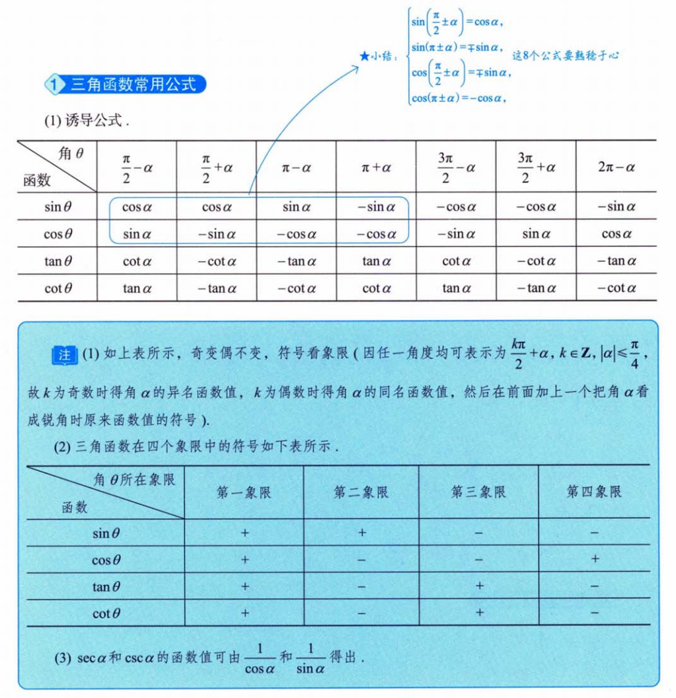
107.三角函数图像¶
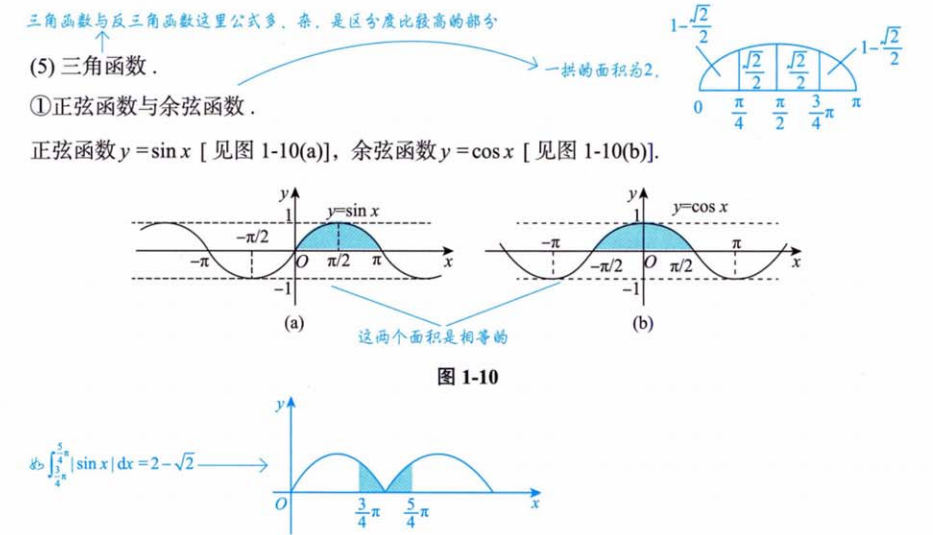 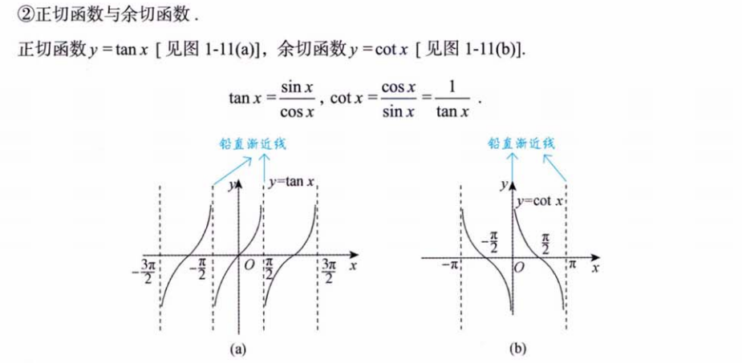 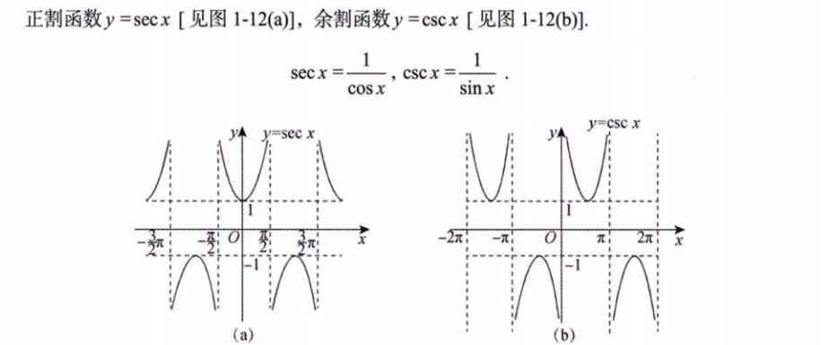 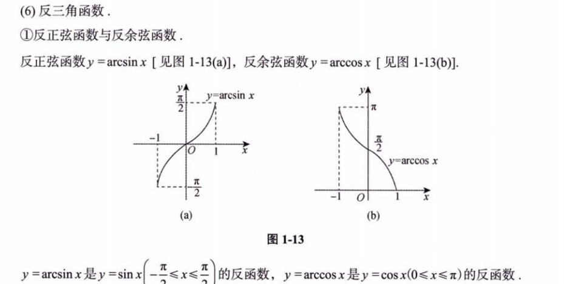 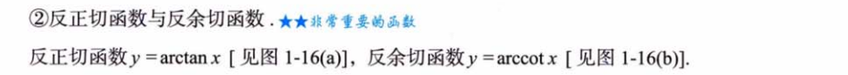 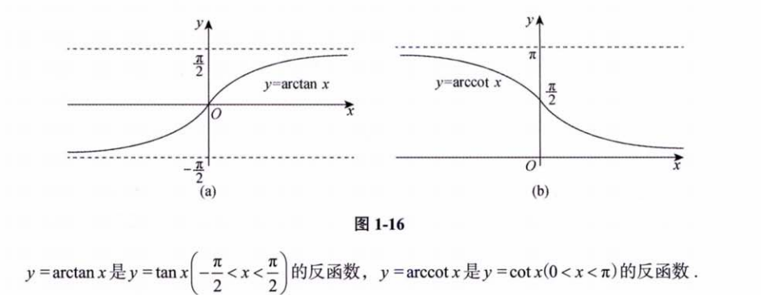
108.常见的平面图形¶
 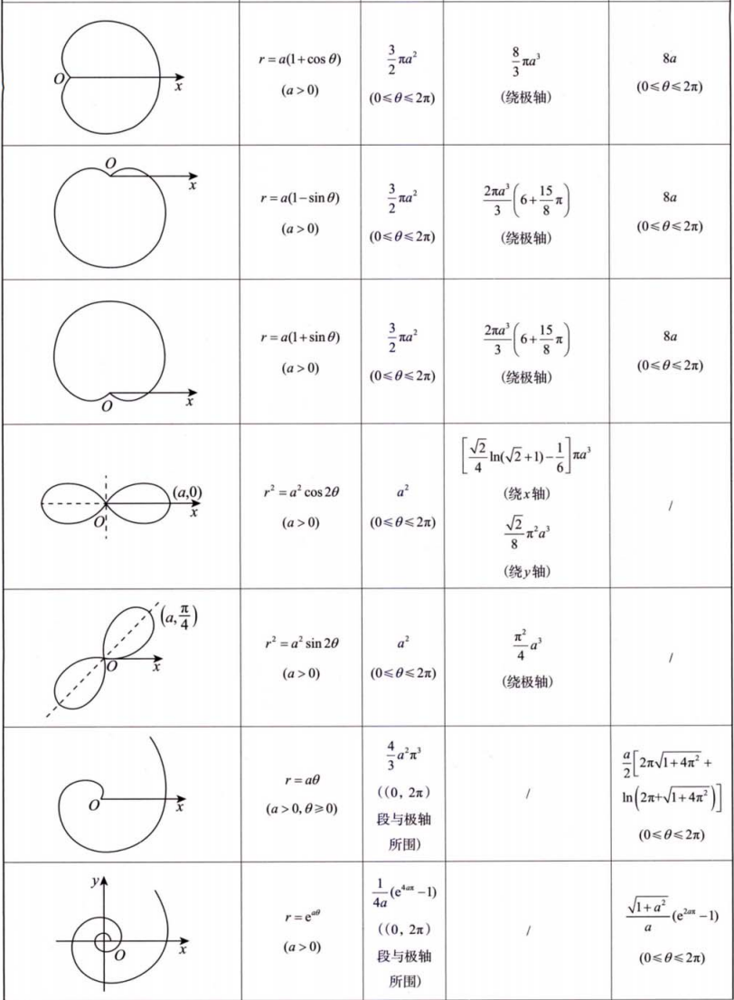
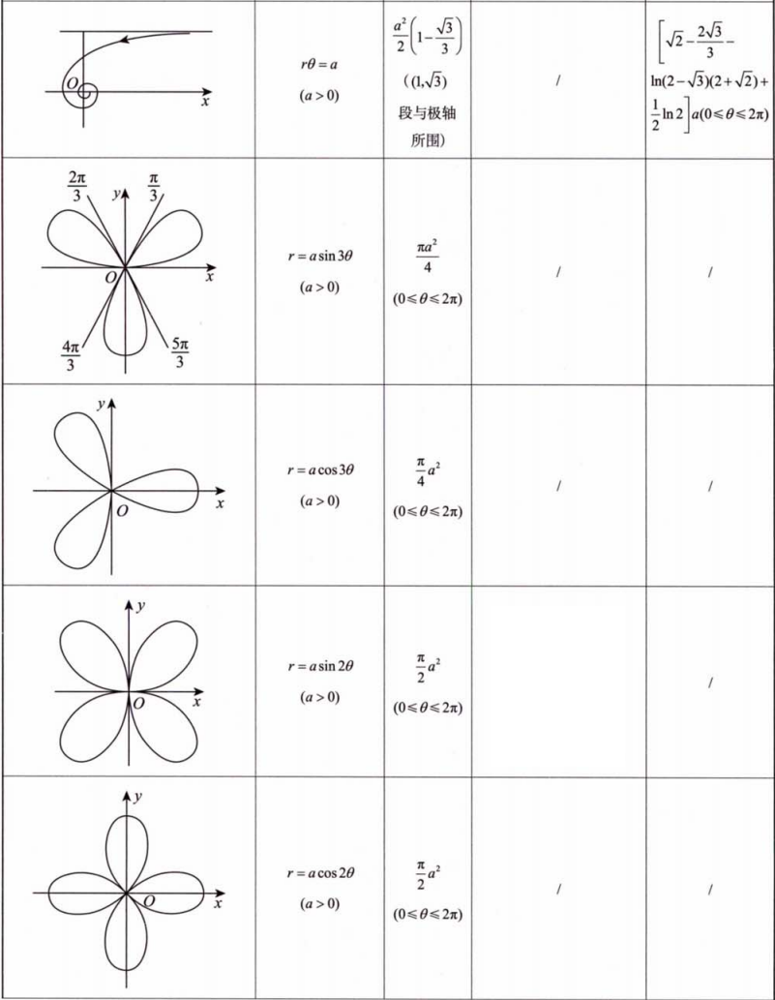
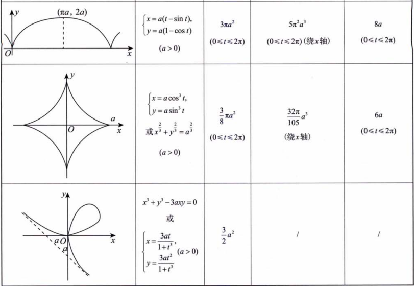
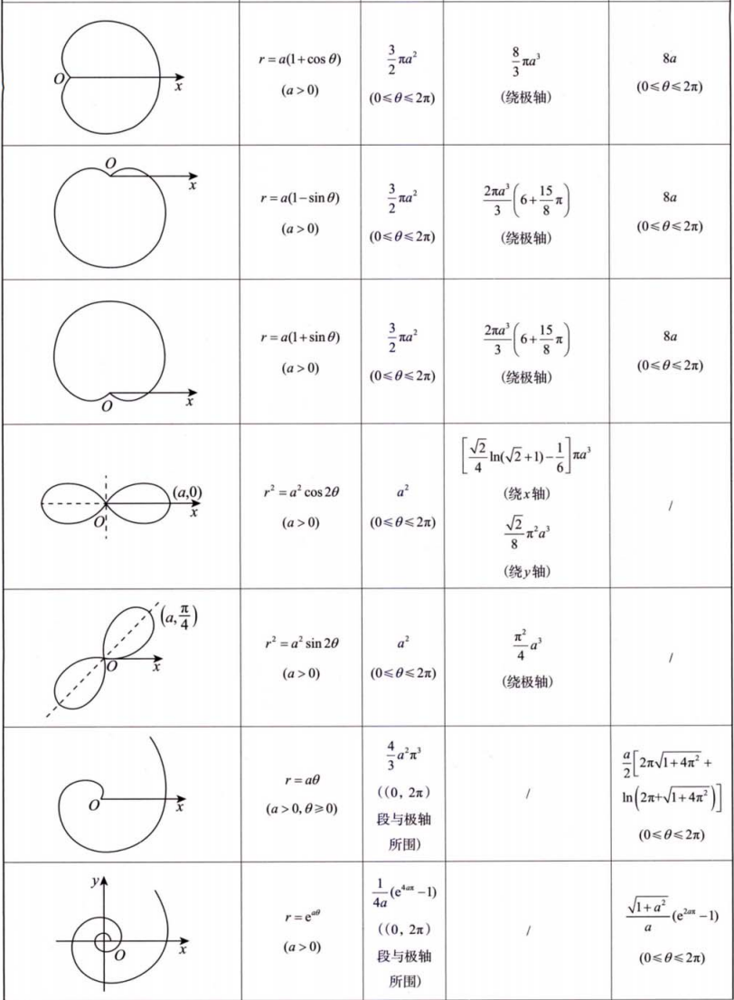
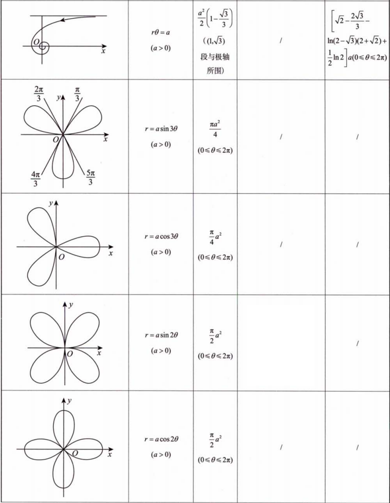
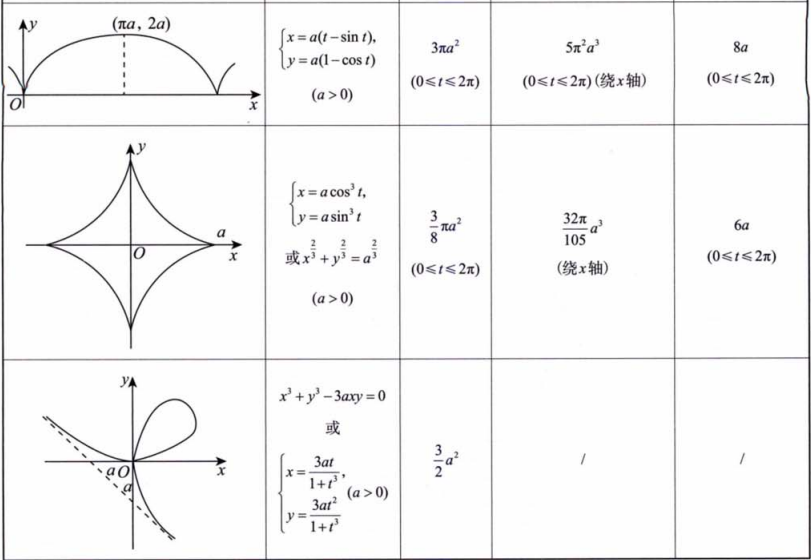
备注： 笔记中部分公式可能因手写识别或排版存在小误差，以上已根据标准数学表达式进行校正。建议在使用时结合教材或权威资料核对。
评论